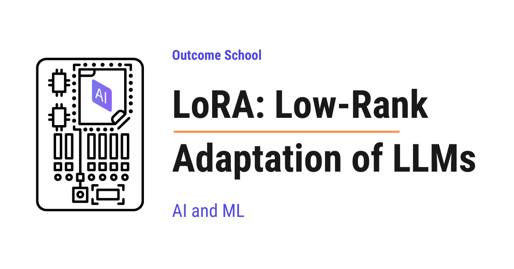
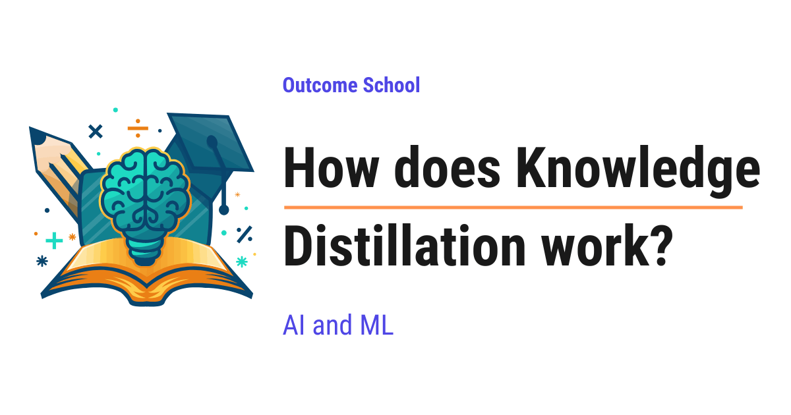
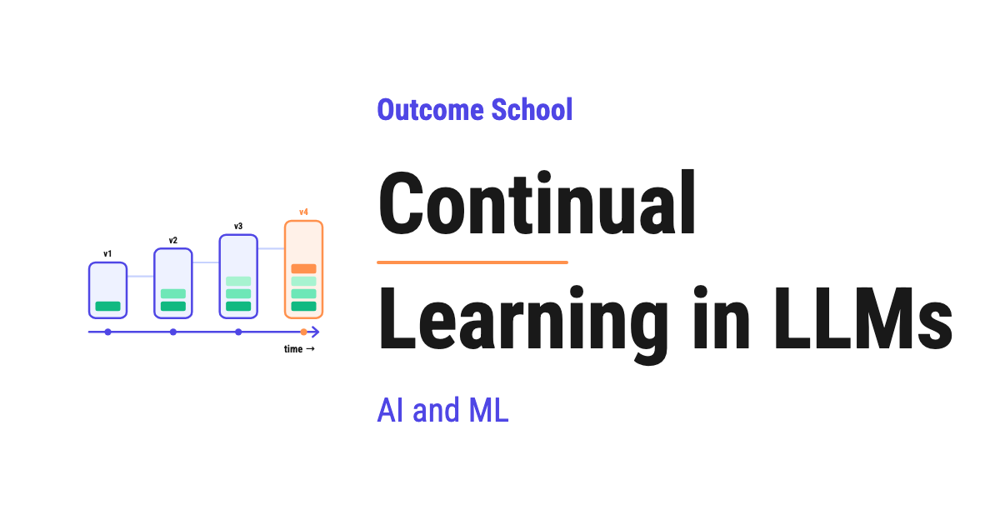
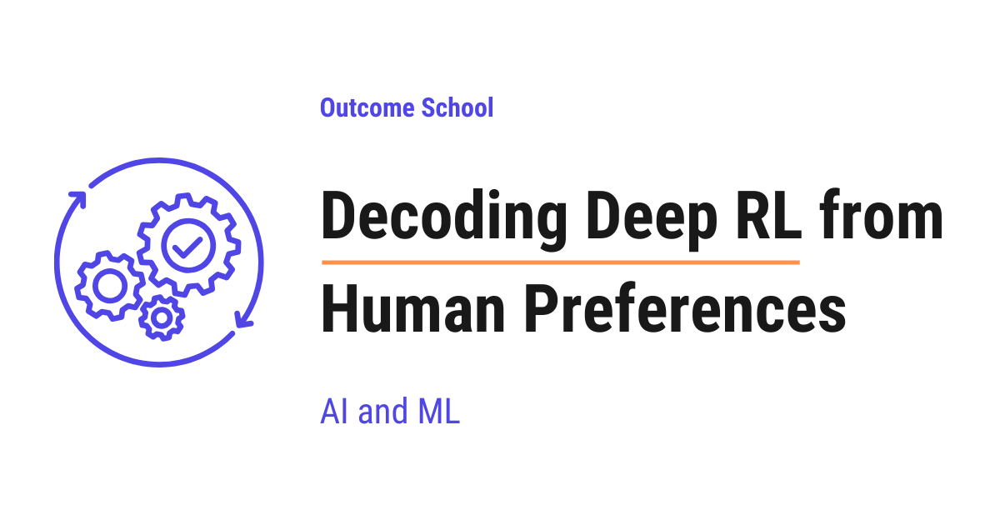
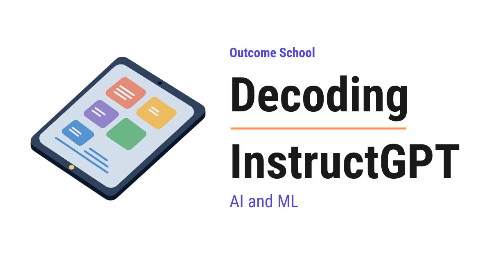
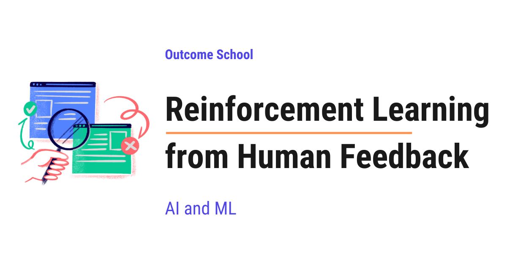
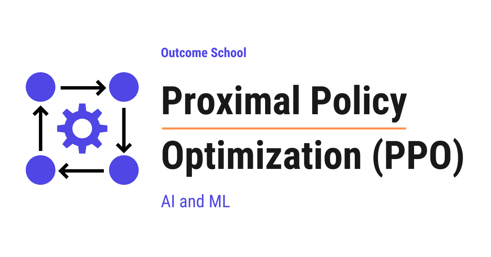
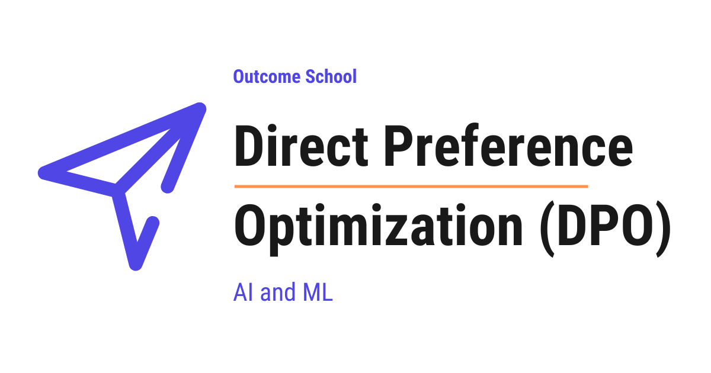

AI Engineering Course
Module 7
Training, Fine-Tuning, and Alignment
Personal offline study copy. Content © Outcome School / Amit Shekhar. Not for redistribution. See study/NOTICE.md.
Contents
- Module 7: Training, Fine-Tuning, and Alignment
- 7.1 How does fine-tuning work?
- 7.2 What is LoRA (Low-Rank Adaptation) and How Does It Fine-Tune LLMs?
- 7.3 How does Prefix Tuning work?
- 7.4 How does Knowledge Distillation work?
- 7.5 What is Continual Learning in LLMs? Solving Catastrophic Forgetting
- 7.6 What is Deep RL from Human Preferences? The Paper That Started RLHF
- 7.7 What is InstructGPT? How GPT-3 Learned to Follow Instructions
- 7.8 What is RLHF? Reinforcement Learning from Human Feedback Explained
- 7.9 What is Proximal Policy Optimization (PPO) and How Does It Work?
- 7.10 What is Direct Preference Optimization (DPO) and How Does It Work?
- 7.11 What is Group Relative Policy Optimization (GRPO) and How Does It Work?
Module 7
Training, Fine-Tuning, and Alignment
In this module, we will learn how a pre-trained model is adapted to our own task, how it is made smaller, and how it is taught to follow instructions and human preferences.
By the end of this module, we will know when to fine-tune, how LoRA makes it cheap, and how RLHF, PPO, DPO, and GRPO align a model.
Lesson 7.1
How does fine-tuning work?

Fine-tuning is the process of taking a model that is already trained and training it a little more on our own specific data, so that it becomes good at our specific task.
In this blog, we will learn about how Fine-tuning works. We will also see why we need it, how it works step by step with a simple example, how full fine-tuning and LoRA differ and when to use which one based on our use case.
We will cover the following:
- What is Fine-tuning?
- Why do we need Fine-tuning?
- How does Fine-tuning work step by step?
- A simple worked example with numbers
- Full Fine-tuning vs LoRA
- When to use Fine-tuning
- Tips before we Fine-tune
- Summary
Let's get started.
What is Fine-tuning?
Fine-tuning is the process of taking a model that is already trained and training it a little more on our own specific data so that it becomes good at our specific task.
Fine-tuning means making small and careful adjustments to a model that already exists.
Consider a person who already knows how to cook many dishes. They have years of general cooking experience. Now, we want them to become an expert in only Italian food. We do not teach them cooking from zero. We only train them on Italian recipes for some time. Very soon, they become great at Italian food, while keeping most of the old cooking skills.
Note: Some of those old skills do get a little rusty, because all the recent practice was Italian. The same thing happens with models, so we must keep this in mind.
This is exactly what Fine-tuning does. We take a model that already knows a lot, and we teach it our special skill on top of that.
Let's visualize this as below:
+---------------------+ +------------------+
| Base model | | Our own |
| (already trained on | + | examples |
| huge general data) | | (our task data) |
+---------------------+ +------------------+
| |
+-------------+--------------+
|
v
+------------------+
| Fine-tuning |
+------------------+
|
v
+------------------+
| Fine-tuned model|
| (expert at our |
| task) |
+------------------+
Here, we can see that we start with a base model that already knows a lot, add our own examples on top, and after Fine-tuning we get a new model that is an expert at our specific task.
The model we start with is called the base model or the pre-trained model. It is the cook who already knows general cooking.
Now, there is one more word that we will use again and again in this blog, so let's understand it right here. Inside a model, there are millions or even billions of small numbers. These numbers are called weights.
A weight is just a number inside the model that decides how much importance to give to something.
In simple words, weights are the "knowledge" of the model. When a model learns, it is simply adjusting these numbers again and again until it gets things right.
So, Fine-tuning means slightly adjusting these numbers by showing our own examples to the model.
Why do we need Fine-tuning?
Let's understand the problem first, and then Fine-tuning will make complete sense.
Training a large model from zero is very costly. It needs a huge amount of data. It needs very powerful and expensive computers. It can take weeks or even months. Most people and most companies cannot afford this.
So, here comes Fine-tuning to the rescue.
Instead of building a model from zero, we take a model that big companies have already trained on massive data. This base model already understands language, grammar, facts, and general reasoning.
But, here is the catch. This general model does not know our specific needs.
Let's say we run a medical company. The general model can talk about many topics, but it does not answer in the exact medical style and accuracy we want. We do not want to spend millions to build a new model. We only want to adjust the existing one.
This way we can use Fine-tuning to solve the interesting problem of making a general model behave the way we want, without huge cost.
How does Fine-tuning work step by step?
Now, let's understand how Fine-tuning actually works, step by step.
Step 1: Pick a base model.
First, we choose a pre-trained model. This is the model that already learned from huge general data. It already has good values for its weights.
Step 2: Prepare our own dataset.
Then, we collect examples that match our task. Each example usually has an input and the correct output.
Suppose we want our model to reply like a polite customer support agent. Our dataset will have customer questions as input and ideal polite answers as output.
The quality of this data is very important. Good examples lead to a good model. Bad examples lead to a bad model.
Step 3: Show the examples to the model.
After that, we feed our examples to the model one by one. For each input, the model makes a prediction.
Step 4: Measure the mistake.
The model's prediction is compared with the correct answer. How far apart the two are is called the loss.
In simple words, loss is a number that tells us how wrong the model is. It is always zero or more, because it measures the size of the mistake and not its direction. A big loss means a big mistake. A small loss means the model is close to correct. A loss of zero means the answer is exactly right.
Step 5: Adjust the weights.
Now comes the heart of Fine-tuning. The model slightly changes its weights to reduce the loss. This adjustment is done using a method called backpropagation with gradient descent.
We do not need to go deep into the math here. For the sake of understanding, just remember this: the model figures out which direction to nudge each weight so that the next prediction is a little better.
Step 6: Repeat many times.
Finally, Steps 3 to 5 are repeated again and again over all our examples. Each full pass over the data is called an epoch. After enough epochs, the loss becomes small. The model now answers the way we want.
We can picture the flow as below:
+---------+ +------------+ +-----------+ +-------------+
| Input | | Model | | Compare | | Adjust |
| (our |-->| predicts |-->| with the |-->| the weights |
| example)| | an output | | answer | | (less loss) |
+---------+ +------------+ +-----------+ +-------------+
^ |
| the updated weights go back |
+---------------------------------+
Here, we can see that each example flows from input to a prediction, then we compare that prediction with the correct answer to get the loss, then we adjust the weights to reduce that loss. The arrow at the bottom means the updated weights go back into the model, and then the next example flows through the same path. We repeat this again and again, until the loss becomes small.
This is how Fine-tuning works from start to finish.
A simple worked example with numbers
The best way to learn this is by taking an example.
Let's say our model has only one weight, and we call it w. Right now w = 2.0. For a given input, the correct answer should be 10, but the model predicts using a simple rule of input * w.
Suppose the input is 4.
# Our tiny model
weight = 2.0
input_value = 4
correct_answer = 10
prediction = input_value * weight # 4 * 2.0 = 8.0
error = correct_answer - prediction # 10 - 8.0 = 2.0
Here, we can see that the prediction is 8.0, but the correct answer is 10. So our model is short by 2.0. We call this gap the error.
Now, the model adjusts the weight a little to reduce the mistake.
# A small adjustment to the weight
learning_rate = 0.05
adjustment = learning_rate * error * input_value # 0.05 * 2.0 * 4 = 0.4
weight = weight + adjustment # 2.0 + 0.4 = 2.4
Here, we have nudged the weight from 2.0 to 2.4. The learning_rate is a small number that controls how big each adjustment is. We keep it small so the model does not over-correct and jump past the answer.
Let's check the prediction again with the new weight.
prediction = input_value * weight # 4 * 2.4 = 9.6
Here, we can notice that the prediction moved from 8.0 to 9.6. It is much closer to 10 than before. The model will keep repeating this nudging, and the prediction will keep getting closer as below:
8.00 -> 9.60 -> 9.92 -> 9.98 -> 10.00
Here, we can see that each round moves the prediction closer to the correct answer, and after a few rounds it settles at 10. This is exactly what learning looks like.
This tiny example uses only one weight. A real model does the same thing, but for billions of weights at the same time. That is the only difference.
This is how the model slowly learns during Fine-tuning.
Full Fine-tuning vs LoRA
Now that we have learned the basic process, it is time to learn about the two common ways of doing Fine-tuning.
The first way is Full Fine-tuning. Here, we adjust every single weight in the model.
Advantage: The model can learn deeply and change a lot.
Disadvantage: It needs a lot of memory and powerful machines, because billions of weights are being updated and stored.
So, here is the catch with Full Fine-tuning. It is heavy and expensive for large models.
But again, we can have a better solution than this too.
The second way is LoRA, which stands for Low-Rank Adaptation.
In simple words, LoRA keeps the original weights frozen and only trains a small set of new, extra weights on the side. The big model stays untouched, and these small extra pieces carry our new learning.
Consider a thick book that is already printed. We do not want to reprint the whole book to add our notes. Instead, we add a few small sticky notes on the pages. The book stays the same, and our notes hold the new information.
LoRA works like those sticky notes. This makes Fine-tuning much cheaper and faster.
The structure looks like below:
Full Fine-tuning LoRA
---------------- ----
+----------------+ +----------------+
| All weights | | Original |
| get updated | | weights FROZEN |
| (billions of | | (not touched) |
| numbers) | +----------------+
+----------------+ +
+----------------+
| Small extra |
| weights trained|
| (the sticky |
| notes) |
+----------------+
Here, we can see that Full Fine-tuning updates every single weight in the model, while LoRA freezes the big original weights and only trains a small set of extra weights on the side. That is why LoRA needs much less memory and runs much faster.
LoRA is not the only cheap option here. Prefix Tuning also keeps the model frozen, but instead of extra weights on the side, it trains a small prefix that steers every attention layer.
Let me tabulate the differences between Full Fine-tuning and LoRA for your better understanding so that you can decide which one to use based on your use case.
| Point | Full Fine-tuning | LoRA |
|---|---|---|
| What it changes | All weights of the model | Only add small extra weights |
| Memory needed | Very high | Low |
| Speed | Slow | Fast |
| Cost | High | Low |
We must choose based on our use case. If we have limited machines, LoRA is the practical choice. If we have heavy resources and need deep changes, Full Fine-tuning works well.
When to use Fine-tuning
Now, the next big question is: when must we use Fine-tuning?
We must use Fine-tuning when we want the model to learn a specific style, tone, or skill that simple instructions cannot give.
Let's say we want every answer in the exact voice of our brand. Or we want the model to follow a strict medical or legal format. Or we want it to understand the special words used inside our company. In all these cases, Fine-tuning is a strong choice.
But, here is an important note.
Note: Fine-tuning is not always the first answer. If we only need to give the model some facts to read, a simpler method like giving the information directly in the prompt is often enough. We must Fine-tune when we want to change the model's behavior, not just feed it some facts.
So, now we know where we can use Fine-tuning.
The most famous example of this is InstructGPT, where Fine-tuning on human-written answers was the first step that turned GPT-3 into an assistant. We have a detailed blog on Decoding InstructGPT that covers that story from start to finish.
Tips before we Fine-tune
Before we end, let's go through a few important tips.
First, focus on data quality. A small set of clean and correct examples beats a large set of messy examples.
Then, keep our examples consistent. If we want a polite tone, every example must be polite. Mixed signals confuse the model.
After that, start with LoRA if we have limited machines. It gives good results at low cost.
Finally, always test the model after Fine-tuning. We must check it on new examples that it never saw during training. This tells us if it truly learned or just memorized. We have a detailed blog on LLM Evaluation that covers this end to end.
If we follow these tips, our Fine-tuning will give strong and reliable results.
Summary
Now, we have understood how Fine-tuning works.
We started with a model that already learned from huge general data. Then we showed it our own examples. For each example, the model made a prediction, measured the loss, and slightly adjusted its weights to reduce that loss. We repeated this many times until the model answered the way we wanted.
We also learned the two ways to do it. Full Fine-tuning changes all the weights, while LoRA only trains small extra weights to save cost and time.
This way we can use Fine-tuning to turn a general model into a specialist for our own task in a very simple way.
Frequently Asked Questions
Is fine-tuning the same as training a model from scratch?
No. Training a model from zero needs a huge amount of data, very powerful computers, and weeks or even months. Fine-tuning starts from a pre-trained base model that already understands language, grammar, facts, and general reasoning, and only trains it a little more on our own examples. This makes it far cheaper.
Should we fine-tune a model just to give it some new facts?
No. If we only need to give the model some facts to read, a simpler method like putting the information directly in the prompt is often enough. We should fine-tune when we want to change the model's behavior, such as its style, tone, or format, not just feed it facts.
Does fine-tuning make the model forget what it already knew?
Partly. The model keeps most of its general skills, but some old skills can get a little rusty, because all the recent training was on our specific task. It is like a cook who trains only on Italian recipes for a while. We must keep this in mind when we fine-tune.
Do we need a lot of data to fine-tune a model?
No. Data quality matters more than size. A small set of clean and correct examples beats a large set of messy examples. The examples should also be consistent, because mixed signals confuse the model.
How do we know if a fine-tuned model truly learned the task?
We test it on new examples that it never saw during training. This tells us if the model truly learned the task or just memorized the training data. We should always run this check after fine-tuning.
Lesson 7.2
What is LoRA (Low-Rank Adaptation) and How Does It Fine-Tune LLMs?

LoRA (Low-Rank Adaptation) is a way to fine-tune a large model without updating all of its weights. It keeps the original weights frozen and learns a tiny pair of extra matrices on the side.
In this blog, we will learn about LoRA - Low-Rank Adaptation of Large Language Models.
Today, we will cover the following topics:
- The Big Picture
- Why Full Fine-Tuning Is Expensive
- The Core Idea Behind LoRA
- How LoRA Works Step by Step
- A Small Numeric Example
- Where LoRA Is Applied in a Transformer
- Merging LoRA Back Into the Model
- Real-World Use Cases
- Quick Summary
Let's get started.
The Big Picture
Before we go into the details, let's understand the big picture.
LoRA is a way to fine-tune a large model without updating all of its weights. Instead of changing the original weight matrix, we keep it frozen and learn a tiny pair of extra matrices on the side. These tiny matrices capture the "adjustment" we want.
In simple words:
LoRA = Frozen original weights + A small low-rank update learned on the side.
This makes fine-tuning much cheaper, faster, and lighter on storage. And, we still get strong task-specific performance.
Why Full Fine-Tuning Is Expensive
Before jumping into LoRA, we must first understand why full fine-tuning is hard.
We can learn everything about fine-tuning in this video.
A modern Large Language Model can have billions of parameters. For example, a 7 billion parameter model has 7 billion numbers inside it. When we do full fine-tuning, we update every single one of these numbers.
This causes the following issues:
- GPU memory explodes. We need to keep the weights, the gradients, and the optimizer states in memory. For Adam, this can be 3 to 4 times the size of the model itself.
- Training is slow. Updating billions of parameters takes a lot of compute.
- Storage is heavy. Each fine-tuned copy of the model is the same size as the original. If we have 10 different tasks, we need 10 full copies of a multi-gigabyte model.
- Sharing is hard. A multi-gigabyte checkpoint per task is not easy to ship to users.
We need a smarter way. We need a way to adapt the model to a new task without touching most of its weights.
So, here comes LoRA to the rescue.
The Core Idea Behind LoRA
The full form of LoRA is Low-Rank Adaptation.
Let's decompose the name:
LoRA = Low-Rank + Adaptation.
- Adaptation means we are adapting the model to a new task or a new style.
- Low-Rank means the change we apply to the weights is represented in a very compact form using two small matrices.
The idea is based on a powerful observation from the original LoRA paper from Microsoft:
When we fine-tune a large model, the actual update that we apply to the weights is very low-rank. We do not need a full giant update matrix - a much smaller one is enough.
In simple words, the "adjustment" needed to teach the model a new task is much smaller than the model itself. So, we do not need a giant matrix to represent it.
Why does this work? The pre-trained model already knows a lot. It has learned grammar, facts, reasoning, and general patterns. Fine-tuning it for a new task is not a rewrite. It is just a small nudge along a few important directions. That is exactly what "low-rank" means.
Let's take a real-world analogy. Think of the pre-trained model as a giant textbook. Full fine-tuning is like rewriting every page of the textbook for a new topic. LoRA is like keeping the textbook unchanged and adding a small set of sticky notes on top that carry the new knowledge. The textbook stays the same, and the small notes do the actual adjustment.
Now, let's see how this works in math.
A weight matrix W inside the model has shape d x d. In full fine-tuning, we learn a new matrix W_new of the same shape:
W_new = W + ΔW
Here, ΔW is the change we want to apply. Both W and ΔW are huge.
LoRA replaces this huge ΔW with a product of two small matrices:
ΔW = BA
Where:
Ahas shaper x dBhas shaped x rris the rank, a small number like 4, 8, 16, 32, or 64dis the original dimension, often 4096 or larger
Now, BA still has shape d x d, but we never store the full d x d update. We only store A and B, which are tiny compared to W.
Note: For simplicity, we are assuming W is a square d x d matrix. In real Large Language Models, attention projection matrices are square, but feed-forward layers are not. They are usually d x 4d or 4d x d. LoRA works for any rectangular matrix - if W has shape d x k, then B becomes d x r and A becomes r x k. The idea stays exactly the same.
Here is a simple ASCII diagram comparing the sizes.
ΔW (full update) B x A
(d x d matrix) (d x r) (r x d)
+-------------------+ +--+ +-------------------+
| | | | +-------------------+
| | | |
| | | |
| | = | | x
| | | |
| | | |
| | | |
| | | |
+-------------------+ +--+
Here, the big square is the full update we would have to store. The thin column B and the short row A together carry all the information we actually train. The visual size difference is exactly why LoRA is so memory-efficient.
The forward pass for an input vector x becomes:
h = Wx + (BA)x
Here, W is frozen. Only A and B are trained.
How LoRA Works Step by Step
Let's walk through LoRA step by step.
Step 1: Take the pre-trained model and freeze all of its original weights. Nothing inside the original model will be updated during training.
Step 2: For each weight matrix we want to adapt, add two small matrices A and B next to it.
Ais initialized with small random values (Gaussian).Bis initialized with all zeros.
This zero initialization is important. At the start of training, BA = 0, so the model behaves exactly like the original pre-trained model. Training then gradually nudges BA away from zero.
Step 3: During training, only A and B receive gradient updates. The original W stays untouched.
Step 4: During the forward pass, compute the output as:
h = Wx + (alpha / r) * (BA)x
Here, alpha is a scaling factor. The ratio alpha / r controls how strongly the LoRA update influences the output. A common choice is alpha = 2 * r.
Step 5: After training, we have a tiny set of new weights A and B that capture the task-specific knowledge. The original model is still untouched.
That's the entire idea.
Going back to our textbook analogy, the original textbook is the frozen W. The sticky notes are A and B. The notes start blank because B is zero. As training goes on, the notes fill up with corrections that nudge the textbook's behavior toward the new task.
Note: The choice of rank r is the most important LoRA hyperparameter. A smaller r means fewer trainable parameters and faster training, but the adapter has less capacity to learn complex changes. A larger r gives more capacity but loses some of the efficiency benefits. In practice, ranks of 8 to 64 work well for most tasks.
A Small Numeric Example
Let's put this into perspective with real numbers.
Suppose we have a weight matrix W of shape 4096 x 4096. The number of parameters in W is:
4096 x 4096 = 16,777,216
That's around 16.8 million parameters in just one matrix. A full fine-tune would update all of them.
Now, let's apply LoRA with rank r = 8.
Ahas shape8 x 4096= 32,768 parametersBhas shape4096 x 8= 32,768 parameters- Total LoRA parameters = 65,536
Let's compare:
- Full fine-tune: 16,777,216 parameters per matrix
- LoRA with r=8: 65,536 parameters per matrix
That is roughly 256x fewer parameters for the same matrix. And, this is just for one matrix - the savings multiply across every layer of the model.
For a full 7B parameter model, full fine-tuning updates 7 billion parameters. LoRA with rank 8 typically updates only a few million. The trainable parameter count drops by a factor of around 1000x or more, depending on the rank and where LoRA is applied.
Where LoRA Is Applied in a Transformer
LoRA can be applied to any linear layer in the model. But, in practice, LoRA is most commonly applied to the attention projection matrices.
We have a detailed blog on Transformer Architecture that explains how attention layers work inside a transformer.
Inside each attention block, we have four projection matrices:
W_Q- the Query projectionW_K- the Key projectionW_V- the Value projectionW_O- the Output projection
If we want to go deeper into how Q, K, and V are computed and used, we can read Math Behind Attention: Q, K, V.
The original LoRA paper found that adapting just W_Q and W_V is often enough to get strong task performance with minimal extra parameters. In practice, we can also apply LoRA to all four projections, or even to the feed-forward layers, for better quality at the cost of more trainable parameters.
Here is a simple ASCII diagram showing the structure for a single weight matrix.
Input x
|
+-------+-------+
| |
v v
+---------+ +-------+
| W | | A | (trainable, r x d)
| (frozen)| +-------+
+---------+ |
| v
| +---------+
| | B | (trainable, d x r)
| +---------+
| |
v v
+-------+-------+
|
v
h = Wx + (BA)x
Here, W stays frozen and only A and B are trained. The two paths are added together to form the final output.
Merging LoRA Back Into the Model
Here is one of the most beautiful properties of LoRA.
Once training is done, we can merge BA directly into W:
W_merged = W + (alpha / r) * (BA)
Now, the model uses a single weight matrix W_merged exactly like the original. There are no extra matrices and no extra computation at inference time.
This means LoRA adds zero inference latency when merged. We get the benefits of fine-tuning without any runtime overhead.
In our textbook analogy, merging is like permanently writing the sticky notes into the textbook itself. The notes are gone, but the textbook now carries the new knowledge.
We can also keep A and B separate from W if we want to swap between different tasks at runtime. This is the basis of adapter swapping.
Note: Merging is a one-way operation. Once we merge A and B into W, we cannot easily swap that adapter out for a different one. So, if we want to serve many tasks from the same base model, we should keep the adapters unmerged and load them on demand.
This ability to merge is also what sets LoRA apart from the other Parameter-Efficient Fine-Tuning methods. We have a detailed blog on How does Prefix Tuning work? that explains a method where nothing gets merged, and a small learned prefix steers every attention layer of the frozen model instead.
Real-World Use Cases
LoRA is everywhere in modern LLM workflows. Let's see where LoRA is used in practice.
- Fine-tuning open-source LLMs on a single GPU. Models like LLaMA, Mistral, and Qwen are commonly fine-tuned using LoRA on a single consumer or workstation GPU. Without LoRA, this would need a cluster of expensive GPUs.
- Task-specific adapters. Teams train small LoRA adapters for each task - one for summarization, one for code generation, one for customer support - and load only the adapter they need. The base model stays the same.
- Style and domain adaptation. LoRA is used to teach a base model a specific writing style, a domain like medical or legal, or a specific persona.
- Image generation models. LoRA is widely used in image models like Stable Diffusion to add new characters, styles, or concepts without retraining the whole model. The community shares thousands of small LoRA files.
- Foundation for QLoRA. LoRA is the building block for QLoRA, which combines LoRA with 4-bit quantization to fine-tune very large models on a single consumer GPU.
Because LoRA freezes the base model and trains only a small adapter, it is also a popular way to do Continual Learning in LLMs - we can teach the model new tasks without overwriting the knowledge it already has.
Note: When we ship LoRA adapters to users, we only ship the small A and B matrices. These are often just a few megabytes. Compare that to a multi-gigabyte full fine-tuned model. This is why LoRA adapters are so easy to share, swap, and version.
Quick Summary
Let's recap what we have decoded:
- LoRA = Low-Rank Adaptation. We freeze the original weights and learn a small low-rank update on the side.
- The update is
ΔW = BAwhereAandBare tiny matrices controlled by a small rankr. Ais random,Bis zero at the start. This makes the model start exactly like the original pre-trained model.- Only
AandBare trained. The originalWstays frozen, which saves massive amounts of memory and compute. - Trainable parameters drop by 100x to 1000x or more depending on the rank and where LoRA is applied.
- LoRA can be merged into the original weights after training, so there is zero extra latency at inference time.
- Adapter swapping lets us serve many tasks from a single base model by loading different
AandBmatrices. - LoRA is used everywhere - LLMs, image models, domain adaptation, and as the foundation for QLoRA.
This is how LoRA makes fine-tuning of Large Language Models cheap, fast, and accessible.
Frequently Asked Questions
Does LoRA slow down inference?
No. Once training is done, we can merge BA directly into the original weight matrix. The model then uses a single weight matrix exactly like the original, with no extra matrices and no extra computation. So, LoRA adds zero inference latency when merged.
What rank should we choose for LoRA?
In practice, ranks of 8 to 64 work well for most tasks. A smaller rank means fewer trainable parameters and faster training, but less capacity to learn complex changes. A larger rank gives more capacity but loses some of the efficiency benefits. The rank is the most important LoRA hyperparameter.
Why is the matrix B initialized with zeros?
Because at the start of training, BA becomes zero. This makes the model behave exactly like the original pre-trained model. Training then gradually nudges BA away from zero, while A starts with small random values.
Can one base model serve many tasks with LoRA?
Yes. Teams train small LoRA adapters for each task and load only the adapter they need, while the base model stays the same. To do this, we should keep the adapters unmerged, because merging is a one-way operation and a merged adapter cannot easily be swapped out.
What is the relation between LoRA and QLoRA?
LoRA is the building block for QLoRA. QLoRA combines LoRA with 4-bit quantization to fine-tune very large models on a single consumer GPU.
Lesson 7.3
How does Prefix Tuning work?

Prefix Tuning is a method where we keep the entire large language model frozen and only train a small set of extra numbers, called the prefix, that every layer of the model looks at while it works.
In this blog, we will learn about Prefix Tuning, a cheap way to adapt a large language model to a new task without changing the model itself. It saves memory, saves money, and lets one big model serve many different tasks at once. We will also see why full fine-tuning is so expensive, how the prefix is added and trained without changing the model, how Prefix Tuning differs from full fine-tuning and prompt tuning and when to use which one based on our use case, where it falls short and how it compares with LoRA, and where it is used in the real world.
We will cover the following:
- What is a large language model?
- The problem: why full fine-tuning is expensive
- What is Prefix Tuning?
- Prefix Tuning = Prefix + Tuning
- How does Prefix Tuning work?
- The prefix is not real words
- Where the prefix is added
- How the prefix is trained
- How small is the prefix really?
- A simple code example
- Prefix Tuning vs Full Fine-Tuning
- Prefix Tuning vs Prompt Tuning
- Advantages of Prefix Tuning
- Limitations of Prefix Tuning
- Where Prefix Tuning is used
Let's get started.
What is a large language model?
Before jumping into Prefix Tuning, we must know what a large language model is.
A large language model, also called an LLM, is an AI model that has read a huge amount of text and learned to predict the next word.
In simple words, it is a system that understands and writes human language. Tools like ChatGPT, Claude, and Gemini are all built on large language models.
The model has learned its skills by adjusting billions of internal numbers. We call these numbers the parameters, or the weights. These numbers are the model's brain. They hold everything the model knows.
So, remember this one idea. A large language model is just a giant collection of numbers that together know how to handle language. Keep this "giant collection of numbers" picture in mind, because it will help us in the next section.
The problem: why full fine-tuning is expensive
Now, let's understand the problem that Prefix Tuning solves.
Suppose we have a big model, and we want it to become very good at one specific task. For example, we want it to write polite customer support replies. The model is already good at general language, but we want to specialize it.
One of the ways to do this is called fine-tuning.
Fine-tuning means we take the trained model and continue training it on our own task, so its parameters get updated for that task.
In simple words, we keep teaching the model with our own examples until it gets good at our task.
But here is the catch. When we do full fine-tuning, we change every single one of the model's parameters. A modern model can have billions of parameters. Changing all of them needs powerful machines, a lot of time, and a lot of money.
And there is a bigger problem. Suppose we have ten different tasks. With full fine-tuning, we get ten full copies of the model, one for each task. Each copy is huge.
Let's picture this problem like below:
Full Fine-Tuning
task 1 ---> [ full model copy 1 ] (billions of numbers)
task 2 ---> [ full model copy 2 ] (billions of numbers)
task 3 ---> [ full model copy 3 ] (billions of numbers)
ten tasks = ten giant copies = huge storage and cost
Here, we can see that every new task forces us to store one more giant copy of the model. This does not scale. It is slow, costly, and wasteful.
So, here comes Prefix Tuning to the rescue.
What is Prefix Tuning?
Prefix Tuning is a method where we keep the entire large language model frozen and only train a small set of extra numbers, called the prefix, that every layer of the model gets to look at while it works.
In simple words, we do not touch the big model at all. We only learn a tiny add-on for each task.
One thing to be clear about right from the start, because this is where most explanations go wrong. The prefix is not text that we paste in front of our sentence. It is not part of our input at all. It is a block of numbers that we hand to the machinery inside the model, in every single layer. We will see exactly where it goes and how it works in a moment.
The word frozen is important here. Frozen means we do not change the model's numbers at all. They stay exactly as they were. We lock them.
So, instead of training billions of numbers, we train a tiny fraction of them, often well under one percent. The big model stays the same and is shared across every task. Only the small prefix changes from task to task.
This is why Prefix Tuning belongs to a family of methods called Parameter-Efficient Fine-Tuning, often shortened to PEFT. The name simply means we get the benefit of fine-tuning while training only a very small number of parameters.
Prefix Tuning = Prefix + Tuning
Let's decompose the term to understand it better.
Prefix Tuning = Prefix + Tuning
Prefix means something we place at the beginning, in front of something else. For example, in the word "rewrite", the part "re" is a prefix added in front of "write".
Tuning means adjusting something little by little until it works well, just like tuning a guitar until it sounds right.
So, Prefix Tuning means we add a small piece in front of the material that each layer of the model looks at, and we tune only that piece until the model performs our task well.
The big model never gets tuned. Only the prefix gets tuned. This is the whole idea in one line.
So, now we have the right mental picture. Let's see how it actually works inside the model.
How does Prefix Tuning work?
Let's understand the flow step by step.
Step 1: We freeze the entire large language model. None of its billions of numbers will change during training.
Step 2: We create a small set of new numbers. This small set is the prefix. We do not put it into our text. We hand it to the model's inner machinery, and we do this in every layer.
Step 3: While the model processes our real text, every layer also gets to look at the prefix sitting alongside it. The prefix steers the model's output toward our task.
Step 4: We train only the prefix on our task examples, while the big model stays frozen.
Let's picture the whole idea like below:
Prefix Tuning
[ frozen big model ] <- never changes, shared by all tasks
^
|
task 1 ---> [ prefix 1 ] (a few small numbers)
task 2 ---> [ prefix 2 ] (a few small numbers)
task 3 ---> [ prefix 3 ] (a few small numbers)
one shared giant model + one tiny prefix per task
Here, we can see the big win. We store the giant model only once. For each new task, we add only a tiny prefix. Ten tasks no longer mean ten giant copies. They mean one giant model plus ten tiny prefixes.
This is how Prefix Tuning saves so much storage and cost.
The prefix is not real words
When we think of a prefix, we imagine words like "Please write a polite reply:". But the prefix in Prefix Tuning is not made of real words. It is made of pure numbers.
To understand this, we must know one small thing about how a model reads text. A model does not understand letters directly. It first turns every word into a list of numbers. This list of numbers that represents a word is called an embedding.
So, real text first becomes embeddings, and only then does the model process it. We can picture it like below:
real words -> embeddings (numbers) -> model processes them
"polite reply" -> [ 0.2 0.8 ... ]
[ 0.5 0.1 ... ]
Here, we can see that even normal words become numbers before the model uses them.
Now, the prefix skips the words completely. It is a block of free numbers that the model can work with directly, but it does not map back to any real word. We call these the virtual tokens, because they act like extra positions that the real words can look at, but they are not real tokens and they never come from our text.
Because words are limited, but free numbers are not, the model can learn a prefix that captures the task far better than any sentence we could write by hand. We let training discover the right task-specific numbers, and that too without us guessing the right words.
So, remember this. The prefix is a small block of learnable numbers, not a human sentence. In the next section, we will see exactly which numbers inside the model it becomes.
Where the prefix is added
Now, let's go one level deeper, because this is what makes Prefix Tuning special compared to simpler methods.
A large language model is built from many stacked layers. Each layer processes the text and passes its result to the next layer. We have a detailed blog on Decoding Transformer Architecture that explains how this stack is put together. Inside each layer, there is an important part called attention, which is how the model decides which words to focus on.
To understand where the prefix goes, we must first understand how attention works, in simple words. Inside attention, every position makes three things.
- The query is what this position is looking for. Think of it as the question this word is asking.
- The key is a label that says what this position is about. Think of it as a signboard.
- The value is the actual information this position hands over to whoever looks at it.
The way attention works is simple. Each word takes its query, compares it against all the keys, and decides which places are worth looking at. Then it picks up the values from those places. So, queries do the asking, and keys and values do the answering. We have a detailed blog on Math behind Attention - Q, K, and V that covers this with a step-by-step numeric example.
Now, here is the heart of Prefix Tuning.
The prefix does not ask anything. It only answers. At every layer, the prefix supplies extra keys and extra values, and nothing else. All the queries still come from our real words.
So, the real words keep asking their own questions exactly as before. We simply give them some extra places to look, and those extra places are the ones we trained.
Let's picture one layer like below:
one frozen layer
real words ----> queries (the asking)
----> keys, values (the usual answering)
learned prefix --> extra keys, extra values
attention looks at
[ prefix keys + real keys ]
[ prefix values + real values ]
|
v
output of this layer
Here, we can see the whole idea in one picture. The prefix never becomes a word and never asks a question. It quietly sits in the answering side of attention, offering extra places for the real words to look.
And we do this in every layer, not only at the entrance. Each layer has its own separate prefix keys and values. They are not produced by passing one prefix from Layer 1 into Layer 2. Every layer gets its own trained block.
Let's picture the full stack like below:
Layer 1 [ prefix keys/values ] + real words -> attention
Layer 2 [ prefix keys/values ] + real words -> attention
Layer 3 [ prefix keys/values ] + real words -> attention
Because the prefix is present at every layer, it steers the model's behavior steadily from start to finish. This is one big reason Prefix Tuning works so well even though it trains so few numbers.
And since the prefix lives on the key and value side of attention, it is worth knowing how a model already handles keys and values while generating text. We have a detailed blog on KV Cache in LLMs that explains this step by step.
Now, one small thing that matters when we count the numbers later. Since each virtual token supplies a key and a value, and no query, one virtual token is not one list of numbers per layer. It is exactly two lists of numbers per layer.
one virtual token, inside one layer
[ key part ] <- helps the real words decide to look here
[ value part ] <- the information they pick up
( no query part, because the prefix never asks )
Here, we can see why we will multiply by 2 when we count. Let's keep this in mind, we will use it in the very next section.
Note: Even with a prefix at every layer, the total number of trained numbers is still tiny compared to the full model. We are adding small blocks, not full layers.
How the prefix is trained
Now, the question is: how do we find the right numbers for the prefix? The answer is that we learn them, the same way a model learns anything.
Let's understand the training loop step by step.
Step 1: We start with a prefix filled with random numbers. At this point, the prefix is useless and the model's answers for our task are mostly poor.
Step 2: We take a training example, run it through the frozen model with the prefix supplying its extra keys and values at every layer, and the model produces an answer.
Step 3: We compare the model's answer with the correct answer. The difference between them is called the loss, which simply measures how wrong the answer was. A big loss means very wrong. A small loss means almost correct.
Step 4: We adjust only the prefix numbers a little to reduce the loss. The big model is frozen, so it is never touched. Only the prefix learns.
Step 5: We repeat this many times with many examples. Each round, the loss gets a little smaller and the prefix gets a little better.
Let's picture the training loop like below:
supply prefix k/v -> run frozen model -> measure loss -> adjust ONLY the prefix -> repeat
|
(model frozen)
Here, we can see that the whole learning happens inside the small prefix. The giant model just sits frozen and does its usual work. Slowly, the random prefix turns into a powerful task instruction made of numbers.
Note: In practice, adjusting the prefix numbers directly like this can be unstable, which means the training does not settle down nicely. So, the original paper uses a reparameterization trick to make training stable. Reparameterization simply means we produce the same numbers in a different way instead of learning them directly. Here, it trains a smaller block of numbers, passes that block through a small network to produce the actual prefix keys and values, and once the training is over, it throws that small network away and keeps only the final prefix. In the peft library, this trick is the prefix_projection option, and it is off by default. One thing to watch out for here. When we turn it on, the trainable count printed during training is much bigger than the prefix we finally save, because that temporary network is counted too.
This is how the prefix is trained.
How small is the prefix really?
Now, let's put some numbers on this, just for the sake of understanding, so we can feel how big the saving is.
Suppose our big model has about 1.3 billion parameters, with a hidden size of 2048 and 24 layers.
Two of those words need a quick explanation before we use them.
The hidden size is simply how many numbers the model uses to represent one position inside itself. Here it is 2048, so every position is a list of 2048 numbers. The layers are the stacked steps the text passes through, and here there are 24 of them.
With full fine-tuning, we would train all 1.3 billion parameters.
Now, let's count the prefix. Suppose we use 20 virtual tokens, and we add the prefix at every layer. And, as we learned just above, every virtual token carries two lists in each layer, one for the key and one for the value.
Note: For this calculation, we are assuming that the prefix directly stores the key and value numbers for every layer. This is the simplest way to set it up, and it is the default. Some setups produce those same key and value numbers in a different way, and then the count during training comes out different. The prefix_projection setup we just saw above is exactly one such case.
Let's calculate step by step.
Step 1: Numbers in one list = 2048, which is the model's hidden size.
Step 2: Numbers for one virtual token in one layer = 2 * 2048 = 4,096, because we need a key part and a value part.
Step 3: Numbers for 20 tokens in one layer = 20 * 4,096 = 81,920.
Step 4: Numbers across all 24 layers = 81,920 * 24 = 1,966,080.
So, we train about 1,966,080 numbers. Let's compare this with the full model:
Full fine-tuning : 1,300,000,000 numbers trained
Prefix Tuning : 1,966,080 numbers trained
that is roughly 0.15% of the full model
Here, we can see that Prefix Tuning trains only a tiny fraction of the model. The other 99.85% stays frozen and shared. This is exactly why Prefix Tuning is so cheap and so easy to store.
A simple code example
Now, let's see how simple this is in code. We will use the popular peft library from Hugging Face along with the transformers library. The code is as below:
from transformers import AutoModelForCausalLM
from peft import PrefixTuningConfig, get_peft_model
# Load a pre-trained large language model
model = AutoModelForCausalLM.from_pretrained("gpt2")
# Set up Prefix Tuning: add 20 virtual tokens as the prefix
config = PrefixTuningConfig(
task_type="CAUSAL_LM",
num_virtual_tokens=20
)
# Wrap the model so only the prefix will be trained
model = get_peft_model(model, config)
# See how few numbers we are actually training
model.print_trainable_parameters()
Here, we have done a few simple things, and let me explain each part.
AutoModelForCausalLM.from_pretrained("gpt2")loads a ready-made large language model. This is the big model that we will keep frozen.PrefixTuningConfig(...)sets up Prefix Tuning, wherenum_virtual_tokens=20means our prefix is made of 20 learnable virtual tokens.get_peft_model(model, config)wraps the model so that only the prefix is trainable and the big model stays frozen.model.print_trainable_parameters()prints how many numbers we are actually training.
When we run this, it prints the following:
trainable params: 368,640 || all params: 124,808,448 || trainable%: 0.2954
Here, we can see the real numbers for gpt2. Out of about 124 million numbers, we are training only 368,640 of them, which is about 0.3%. The rest stays frozen.
And notice that this number is not a mystery. The gpt2 model has 12 layers and a hidden size of 768, so our formula from the previous section gives us 20 * 2 * 768 * 12 = 368,640, which is exactly what the library printed. It works perfectly.
So, in just a few lines, we get a model that learns a new task by training only a small prefix.
Prefix Tuning vs Full Fine-Tuning
Now that we have learned about Prefix Tuning, it's time to compare it with full fine-tuning, so we know when to use which one.
In full fine-tuning, we change every parameter of the model and store a full copy for each task. In Prefix Tuning, we freeze the model and train only a small prefix per task.
Let me tabulate the differences between Full Fine-Tuning and Prefix Tuning for your better understanding so that you can decide which one to use based on your use case.
| Feature | Full Fine-Tuning | Prefix Tuning |
|---|---|---|
| What changes | Every parameter of the model | Only the small prefix |
| Storage per task | One full giant copy | One tiny prefix |
| Training cost | Very high | Very low |
| Best accuracy | Higher, this is where it wins | Close, but usually a little behind |
| Switching tasks | Load a whole new model | Just swap the prefix |
| Risk of forgetting | Higher, the model can lose old skills | Lower, the base model stays intact |
Here, we can see that Prefix Tuning is far cheaper and far more flexible for serving many tasks. Full fine-tuning can still squeeze out the best possible accuracy on a single task when we have plenty of data and compute, but for most real use cases, Prefix Tuning gives us most of the benefit at a tiny fraction of the cost.
Prefix Tuning vs Prompt Tuning
There is one more closely related method called Prompt Tuning, from Lester et al., 2021, and people often confuse the two. Let's clear this up.
In Prompt Tuning, we also add a block of learnable numbers, but we add it to the model's input, right at the entrance, before the first layer. Those numbers then flow through the model like any other input. The inner layers get nothing extra of their own.
In Prefix Tuning, we do not touch the input at all. We inject learned keys and values straight into the attention of every layer, all the way through the model.
Let's picture the difference like below:
Prompt Tuning Prefix Tuning
[ prefix ] + real words Layer 1 [ prefix keys/values ] + real words
| Layer 2 [ prefix keys/values ] + real words
Layer 1 Layer 3 [ prefix keys/values ] + real words
Layer 2
Layer 3
(added once, to the input) (injected into attention in every layer)
Here, we can see that Prefix Tuning steers the model at every layer, while Prompt Tuning steers it only once at the entrance. Because of this, Prefix Tuning often performs better, especially when the task is hard.
Let's put a number on the difference, using the same model we used above, the one with a hidden size of 2048 and 24 layers. Prompt Tuning adds the block only once, to the input, so there is no key part and value part per layer to pay for. It trains 20 * 2048 = 40,960 numbers. Prefix Tuning trains 1,966,080 numbers. So, Prompt Tuning trains about 48 times fewer numbers.
Here, we can see the trade-off clearly. Prompt Tuning is even simpler and far smaller, so it can be a good choice for very large models on easier tasks. Prefix Tuning costs more but steers the model much more strongly. We choose between them based on our use case.
Advantages of Prefix Tuning
Now, let's quickly understand why Prefix Tuning is so useful.
- Very cheap to train: We train only a tiny prefix, so we do not have to keep gradients and optimizer state for billions of frozen parameters, which saves a lot of memory.
- Tiny storage per task: Each task needs only a small prefix, not a full copy of the model.
- One model, many tasks: We keep one shared frozen model and simply swap the prefix to switch tasks instantly.
- Lower risk of forgetting: Because the base model stays frozen, its original parameters are preserved exactly. The prefix can still change how the model behaves, but the general language skills baked into the weights are never overwritten.
- Easy to deploy: We can serve many tasks from a single model loaded once, which saves a lot of memory in production.
Note: Let's be precise about that first point, because it is easy to read too much into it. The model still runs a full forward and backward pass on every step, because the learning signal has to travel back through all the layers to reach the prefix. So, the saving is mostly in memory and storage, and not in raw speed.
Limitations of Prefix Tuning
Now, let's be honest about the other side, because no method is perfect.
- It adds work to every attention step: The prefix adds extra keys and values at every layer, so attention now looks over a longer list at each step. That costs extra computing and extra memory, and the longer the prefix, the more it costs. How much this eats into the length of text we can actually feed the model depends on the implementation and the model, so it is something we must check for our own setup rather than assume.
- A longer prefix is not always better: It is easy to think that adding more virtual tokens will keep making things better. It does not. The quality improves up to a point, and after that a longer prefix starts making things worse. So, the prefix length is one more setting we must tune by trying different values. To give us a starting range, the original paper found the sweet spot to be around 10 virtual tokens for turning tables into sentences, and around 200 for summarization. So, the harder the task, the longer the prefix it wants.
- It is harder to train than LoRA: As we saw above, the prefix numbers do not settle down easily, which is why the original paper needed that extra trick during training. LoRA, another Parameter-Efficient Fine-Tuning method, trains more smoothly, and its learned weights can be merged back into the model, so nothing extra is carried at the time of answering. This is one reason LoRA has become a much more common practical choice for Parameter-Efficient Fine-Tuning than Prefix Tuning.
So, when do we still pick Prefix Tuning? It is a good fit when we want the steering to happen at every layer, and when the extra attention cost is acceptable for our prefix length and our input size. For everyday adaptation work, LoRA is usually the easier first thing to try.
Where Prefix Tuning is used
Now, let's see where Prefix Tuning is used in the real world.
- Many tasks, one model: A company that needs summarizing, translation, and support replies can serve all of them from one frozen model with three small prefixes.
- Limited hardware: Teams without expensive machines can still adapt a big model, because the memory needed to train a small prefix is far smaller.
- Quick experiments: Researchers can try a new task without setting up a full fine-tuning run, because only a small prefix has to be trained and saved.
- Personalization: A separate small prefix can adapt the same model to a different writing style or domain for each customer.
So, now we know where we can use Prefix Tuning.
This was all about Prefix Tuning.
Now we must have understood what Prefix Tuning is, why we need it, how it works step by step by training only a small prefix on top of a frozen model, where it falls short, and where it is used in the real world.
Frequently Asked Questions
Should we use Prefix Tuning or LoRA?
For everyday adaptation work, LoRA is usually the easier first thing to try. LoRA trains more smoothly, and its learned weights can be merged back into the model, so nothing extra is carried at answer time. Prefix Tuning is a good fit when we want steering at every layer and the extra attention cost is acceptable.
Does Prefix Tuning make training faster?
Not much. The model still runs a full forward and backward pass on every step, because the learning signal has to travel back through all the layers to reach the prefix. So, the saving is mostly in memory and storage, and not in raw speed.
How many virtual tokens should the prefix have?
There is no single right number, so we must tune it by trying different values. Quality improves up to a point, and after that a longer prefix starts making things worse. The original paper found the sweet spot around 10 virtual tokens for turning tables into sentences, and around 200 for summarization.
Why does the trainable parameter count look bigger with prefix_projection turned on?
Because the temporary network is counted too. With prefix_projection, a smaller block of numbers passes through a small network to produce the prefix keys and values. That network is used only during training and thrown away afterward, so the prefix we finally save is much smaller than the printed trainable count.
Lesson 7.4
How does Knowledge Distillation work?

Knowledge Distillation is a technique where we train a small model to copy the behavior of a large model. The big model is the teacher, and the small model is the student.
In this blog, we will learn about how Knowledge Distillation works. We will also see why we need it, how a small model learns from a big model, and how this lets us run powerful AI on a phone, on an edge device, and at low cost.
We will cover the following:
- What is Knowledge Distillation?
- Why we need Knowledge Distillation
- Hard labels vs soft labels
- Dark knowledge
- Temperature in the softmax
- The distillation loss
- A step-by-step training walkthrough
- Types of Knowledge Distillation
- Real examples of Knowledge Distillation
- Wrapping up Knowledge Distillation
Let's get started.
What is Knowledge Distillation?
Knowledge Distillation is a technique where we train a small model to copy the behavior of a large model.
In simple words, we take a big, smart model and teach a small model to think like it.
The big model is called the teacher. The small model is called the student. The teacher already knows a lot. The student is new and small. Our goal is to pass the teacher's knowledge into the student.
Let's say we have a very experienced senior teacher in a school. This teacher has read thousands of books and has years of experience. But this teacher is expensive and slow, and there is only one of them. Now, we want many copies of a "good enough" teacher who can work fast and cheap. So, the senior teacher trains a young student until the student can answer almost as well. The student is not as deep as the senior, but the student is fast, cheap, and good enough for daily work.
This is exactly what Knowledge Distillation does, but with AI models.
Before we go deeper, let's understand one basic thing. An AI model is, at its heart, a huge collection of numbers that have been adjusted during training so the model can make good predictions. A large model has many such numbers, so it is powerful but heavy. A small model has fewer numbers, so it is light but, on its own, less smart.
Knowledge Distillation is the bridge. We use the heavy, smart model to make the light model smarter than it could become on its own.
We can picture it as below:
+------------------------------+
| TEACHER (big, smart, slow) |
+------------------------------+
|
| passes its knowledge
v
+------------------------------+
| STUDENT (small, fast, cheap)|
+------------------------------+
Here, we can see that the big teacher model passes its knowledge down into the small student model. The teacher stays big, smart, and slow. The student ends up small, fast, and cheap, but it has learned to behave almost like the teacher.
This is the basic idea. Now, let's understand why we even need this.
Why we need Knowledge Distillation
Big models are very accurate. But big models are also slow and expensive.
A large model needs a lot of memory. It needs powerful and costly hardware. It takes more time to give an answer. This delay between asking and getting the answer is called latency. High latency means the user waits longer.
Now, think about where we want to use AI.
We want AI on our phones. We want AI on small devices like a smartwatch, a camera, or a car. These small devices are called edge devices, because they sit at the "edge", close to the user, far from big data centers. Edge devices have little memory and little battery. A huge model simply cannot fit there.
We also want AI to respond instantly. A chat reply that takes ten seconds feels broken. We want low latency.
And, we want AI to be cheap to run. Running a giant model for millions of users costs a lot of money.
So, the situation is this:
- The big model is accurate but slow and expensive.
- The small model is fast and cheap but less accurate on its own.
We want the best of both. We want a small, fast, cheap model that still keeps most of the accuracy of the big model.
So, here comes Knowledge Distillation to the rescue. It lets us shrink the brain into a smaller body while keeping most of the intelligence.
Now, to understand how the teacher passes its knowledge, we must first understand the difference between hard labels and soft labels.
Hard labels vs soft labels
Let's take a simple example. Suppose we are building a model that looks at a photo and decides what is in it. The possible answers are cat, dog, car, and horse. Each possible answer is called a class.
Now, suppose we show the model a photo of a cat.
A hard label is the single correct answer, and nothing more. For this photo, the hard label says: this is a cat. We can write it like this.
cat = 1
dog = 0
car = 0
horse = 0
Here, we can see that the hard label gives full marks to cat and zero to everything else. It is just the plain truth, with no extra information.
Now, let's look at what the teacher model actually produces. When the teacher sees the cat photo, it does not output just one word. It outputs a probability for every class. A probability is a number between 0 and 1 that tells us how confident the model is. All the probabilities add up to 1.
This full set of probabilities is called a soft label or a probability distribution. It can look like this.
cat = 0.90
dog = 0.08
car = 0.01
horse = 0.01
Here, we can see that the teacher is 90% sure it is a cat. But it also gives a small 8% to dog, and almost nothing to car and horse.
So, the difference is simple.
- A hard label says only "it is a cat".
- A soft label says "it is mostly a cat, a little bit like a dog, and not at all like a car".
This small extra information turns out to be very powerful. Let's understand why.
Dark knowledge
The soft label carries hidden information that the hard label throws away. This hidden information is called dark knowledge.
In simple words, dark knowledge is what the teacher knows about how the classes relate to each other.
Let's go back to our cat photo. The teacher gave dog an 8% chance and car almost 0%. Think about what this is telling us. The teacher is saying: a cat looks somewhat like a dog, but a cat looks nothing like a car.
This is true knowledge about the world. Cats and dogs are both furry, four-legged animals, so they can be confused. A cat and a car have nothing in common, so they are never confused.
A hard label can never teach this. A hard label only says "cat", and treats "dog" and "car" as equally wrong. But they are not equally wrong. Being a little bit "dog" is a reasonable mistake. Being "car" is a silly mistake.
So, when the student learns from the soft labels, it learns these relationships. It learns that cats and dogs are close. It learns that cats and cars are far apart. This is much richer than just memorizing the single right answer.
This is the heart of Knowledge Distillation. The soft labels of the teacher teach the student far more than a plain hard label ever could.
Let's make this concrete with a comparison.
HARD LABEL SOFT LABEL (from teacher)
----------- -------------------------
cat = 1 cat = 0.90 <- the answer
dog = 0 dog = 0.08 <- "a bit like a dog"
car = 0 car = 0.01 <- "nothing like a car"
horse = 0 horse = 0.01 <- "nothing like a horse"
Tells: only the answer Tells: the answer + how classes relate
Here, we can see that the soft label on the right is doing extra teaching that the hard label on the left simply cannot do.
Now, there is one more problem. Sometimes the teacher is too confident. It can say cat = 0.99 and give almost nothing to the others. When that happens, the useful dark knowledge becomes very tiny and hard to see. We need a way to bring out these small numbers. So, here comes temperature into the picture.
Temperature in the softmax
Before we explain temperature, we must understand one small step that happens inside the model.
When a model makes a prediction, it first produces raw scores for each class. These raw, unprocessed scores are called logits. A logit can be any number, like 8.2 or -1.4. These raw scores are hard to read directly.
To turn these raw scores into clean probabilities that add up to 1, the model uses a function called the softmax. The softmax takes the logits and squashes them into nice probabilities between 0 and 1.
We have a detailed blog on Cross-Entropy Loss that explains logits and the softmax in depth.
Now comes the clever part. The softmax has a knob we can turn, called the temperature, often written as T.
In simple words, temperature controls how soft or how sharp the probabilities come out.
- A low temperature (like
T = 1) gives sharp probabilities. One class gets a very high value, and the rest get tiny values. - A high temperature (like
T = 4) gives softer, more spread-out probabilities. The smaller values grow bigger and become easier to see.
Let's see this with our cat example. At a normal temperature, the teacher is very confident.
T = 1 (sharp): cat = 0.95 dog = 0.04 car = 0.005 horse = 0.005
Now, if we raise the temperature, the same prediction spreads out.
T = 4 (soft): cat = 0.70 dog = 0.22 car = 0.05 horse = 0.03
Here, we can see that at the higher temperature, the dog value jumped from 0.04 to 0.22. The dark knowledge, which means the relationship between cat and dog, is now clear and loud. The student can learn from it much more easily.
So, during distillation, we raise the temperature so the teacher's soft labels reveal these subtle relationships. The student gets a clearer, richer lesson.
Note: We use the higher temperature only during training. When the finished student is actually used in the real world, we go back to the normal temperature.
Now, we have soft labels, dark knowledge, and temperature. The next question is: how exactly do we train the student using all this? The answer is the distillation loss.
The distillation loss
To train any model, we need a way to measure how wrong it is. This measure of wrongness is called the loss. Training means slowly changing the model's numbers to make the loss as small as possible. A smaller loss means the model is making better predictions.
In Knowledge Distillation, the student must do two things at the same time.
First, it must match the teacher's soft labels. The student looks at a photo, produces its own soft probabilities, and we compare them to the teacher's soft probabilities. We want them to be as close as possible. The measure of how different two probability distributions are is called KL divergence. We do not need the math. We only need to know that a smaller KL divergence means the two distributions are more similar. This part is called the distillation loss.
Second, the student must also get the true answer right. We compare the student's prediction to the real hard label, the actual truth. This part is the normal loss, the same loss we would use to train any model from scratch.
Now, why do we keep both? Because each one helps.
- The distillation loss teaches the rich dark knowledge from the teacher.
- The normal loss keeps the student grounded in the real, correct answers, so it does not blindly copy the teacher's mistakes.
So, the total loss is a blend of the two.
Total loss = part 1 + part 2
part 1 = weight x distillation loss (student vs teacher soft labels)
part 2 = (1 - weight) x normal loss (student vs true hard labels)
Here, we can see that the total loss is just a weighted mix. The weight is a number we choose that decides how much the student must listen to the teacher versus the true answer. For example, we often give more weight to the teacher's soft labels, because that is where the extra knowledge lives.
The flow looks like below:
+----------------+ +----------------+
same photo ---> | TEACHER | | STUDENT | <--- same photo
| (big model) | | (small model) |
+----------------+ +----------------+
| |
teacher | | student
soft labels v v soft labels
+------------------------------------------+
| distillation loss (student vs teacher) |
+------------------------------------------+
|
v
+--------------------+
| TOTAL LOSS |
| (weighted mix) |
+--------------------+
^
|
+------------------------------------------+
| normal loss (student vs true label) |
+------------------------------------------+
^ ^
| |
true hard label student prediction
Here, we can see that the same photo goes into both the teacher and the student. The distillation loss measures how far the student's soft labels are from the teacher's soft labels. The normal loss measures how far the student's prediction is from the true hard label. Both losses are then blended into one total loss, which is the single number we make smaller during training.
This combined loss is the engine of Knowledge Distillation. By making this total loss small, the student learns the correct answers and the teacher's wisdom together.
Now, let's put all the pieces into one clear walkthrough.
A step-by-step training walkthrough
Let's walk through exactly what happens when we distill knowledge from the teacher into the student. We will use our animal photo example.
Step 1: We start with a trained teacher model. The teacher is big and already accurate. We do not change the teacher at all during distillation. It only gives lessons.
Step 2: We take a fresh, small student model. The student starts with random numbers and knows nothing yet.
Step 3: We take a photo from our training data, for example, our cat photo.
Step 4: We pass the photo through the teacher. We use a high temperature so the teacher produces soft labels full of dark knowledge, like cat = 0.70, dog = 0.22, car = 0.05, horse = 0.03.
Step 5: We pass the same photo through the student. The student produces its own soft labels at the same high temperature, for example, cat = 0.50, dog = 0.30, car = 0.15, horse = 0.05.
Step 6: We calculate the distillation loss by comparing the student's soft labels to the teacher's soft labels using KL divergence. Right now they are different, so this loss is high.
Step 7: We also calculate the normal loss by comparing the student's normal prediction to the true hard label, cat = 1. For this part, we use the normal temperature.
Step 8: We blend the two losses into the total loss using our chosen weight.
Step 9: We slightly adjust the student's numbers to make this total loss smaller. This single adjustment is called one training step.
Step 10: We repeat Steps 3 to 9 for thousands of photos, again and again.
Slowly, the student's soft labels start to match the teacher's. The student learns not just the answers, but also the rich relationships between classes. After enough training, the student becomes a small, fast model that behaves almost like the big teacher.
We have a detailed blog on Gradient Descent that explains how this adjustment to the model's numbers works step by step.
This is how Knowledge Distillation actually trains the student. Now, let's see the different types of it.
Types of Knowledge Distillation
Everything we have learned so far is the most common form, but there are three main types. The difference is simply about which part of the teacher the student copies. Let's keep it simple.
Response-based distillation. This is what we have been doing the whole time. The student copies the teacher's final output, which means the soft labels at the end. The student watches what the teacher answers and learns to answer the same way. This is the simplest and most popular type.
Feature-based distillation. A model does not jump straight from input to answer. It processes the input step by step through inner stages called layers. The output of these inner stages is called a feature, which is the model's internal understanding before the final answer. In feature-based distillation, the student copies these inner features of the teacher, not just the final output. It is like a student copying not only the senior's final answer but also the rough working and notes the senior wrote on the way.
Relation-based distillation. Here, the student learns the relationships between different things the teacher saw. For example, the teacher can treat two photos as very similar to each other. The student learns to keep those same two photos similar in its own understanding. So, the student copies the connections the teacher draws between examples, not just single answers.
So, to summarize the three types simply.
Response-based -> copy the teacher's FINAL answer (soft labels)
Feature-based -> copy the teacher's INNER understanding (features in layers)
Relation-based -> copy the RELATIONSHIPS the teacher sees between examples
Here, we can see that all three share the same goal. The student tries to behave like the teacher. They only differ in which part of the teacher's behavior the student copies. We can pick one based on our use case.
Now, let's look at where Knowledge Distillation is used in the real world.
Real examples of Knowledge Distillation
DistilBERT. BERT is a famous language model used to understand text. It is powerful but big. DistilBERT is a distilled version of BERT. It is much smaller and faster, around 40% smaller and about 60% faster, while keeping roughly 97% of BERT's language understanding. This is a perfect example of the trade we want: a much lighter model that keeps almost all the accuracy.
Smaller chat models. Many small chat models are distilled from much larger chat models. The large model acts as the teacher and produces high-quality answers. The small model is trained to copy those answers. The result is a compact chat model that can run cheaply and reply fast, while still sounding close to the big one. We have a detailed blog on Small Language Models (SLMs) that covers these compact models end to end.
On-device AI. This is where distillation truly shines. When we want AI to run directly on a phone, a smartwatch, or a camera, the model must be tiny and quick. We distill a big, accurate model into a small student that fits on the device. So, features like offline translation, voice typing, and smart photo sorting can run right on the device, without sending data to a server. This means faster results, lower cost, and better privacy, because our data stays on the device. On-device models like these are usually shipped in the GGUF format. We have a detailed blog on how GGUF works that explains how these models are packed into one file.
So, now we know where we can use Knowledge Distillation, and why it matters so much for real products.
Distillation is one way to get a smaller model. Another is quantization, where we keep the same model but store its numbers using fewer bits. We have a detailed blog on how Model Quantization works that explains this from the ground up.
Wrapping up Knowledge Distillation
Let's quickly recap everything in simple words.
A big model, the teacher, is accurate but slow and expensive. A small model, the student, is fast and cheap but less smart on its own. Knowledge Distillation trains the student to copy the teacher, so we get a small model that keeps most of the big model's accuracy.
The key idea is that the teacher does not just give the right answer. It gives soft labels, a full set of probabilities over all classes. These soft labels carry dark knowledge, which means they reveal how the classes relate to each other, like a cat being a little bit "dog" and nothing like a "car". We use a higher temperature in the softmax to make this dark knowledge clear and easy to learn.
We train the student with a combined loss. The distillation loss pulls the student toward the teacher's soft labels using KL divergence, and the normal loss keeps the student correct on the true hard labels. We repeat this over many examples until the student behaves like the teacher.
This is how Knowledge Distillation works.
Frequently Asked Questions
Does the teacher model change during Knowledge Distillation?
No. The teacher is a big model that is already trained and accurate. We do not change the teacher at all during distillation. It only gives lessons in the form of soft labels, and only the student's numbers are adjusted to make the total loss smaller.
Why not train the small model only on the true labels?
Because hard labels throw away useful information. A hard label only says "it is a cat" and treats every other class as equally wrong. The teacher's soft labels also show how classes relate, like a cat being a little bit like a dog and nothing like a car. This dark knowledge teaches the student far more.
Is the high temperature also used when the student model is deployed?
No. We use the higher temperature only during training, so the teacher's soft labels reveal the subtle relationships between classes. When the finished student is actually used in the real world, we go back to the normal temperature.
Does the student simply copy the teacher's mistakes?
Not blindly. The total loss blends two parts. The distillation loss pulls the student toward the teacher's soft labels, and the normal loss compares the student to the true hard labels. This normal loss keeps the student grounded in the real, correct answers, so it does not blindly copy the teacher's mistakes.
What is the difference between Knowledge Distillation and quantization?
Both make a model smaller, but in different ways. Knowledge Distillation trains a separate small student model to copy a big teacher model. Quantization keeps the same model but stores its numbers using fewer bits.
Lesson 7.5
What is Continual Learning in LLMs? Solving Catastrophic Forgetting

Continual Learning is the ability of a model, like an LLM, to keep learning new information over time, without forgetting what it has already learned.
In this blog, we will learn about Continual Learning in LLMs. We will understand what it is, why we need it, the big problem of catastrophic forgetting, the approaches used to solve it, and where it is used in the real world.
We will cover the following:
- What is Continual Learning?
- Why do we need Continual Learning in LLMs?
- The big problem: Catastrophic Forgetting
- Approaches to Continual Learning in LLMs
- Challenges in Continual Learning
- Real-world use cases
Let's get started.
What is Continual Learning?
Continual Learning is the ability of a model to keep learning new information over time, without forgetting what it has already learned.
In simple words, Continual Learning = Continual + Learning. The model continues to learn, again and again, as new data arrives.
The best way to learn this is by taking an example. Let's say we have a child. The child learns how to walk. Then the child learns how to talk. Then the child learns how to read. The child does not forget how to walk just because the child learned how to read. The child keeps adding new skills on top of the old skills.
This is exactly what we want from our LLMs. We want them to keep learning new things, without losing the knowledge they already have.
Why do we need Continual Learning in LLMs?
The world keeps changing every single day. New events happen. New facts arrive. New technologies come into the picture. New words get added to our language. Our LLMs must keep up with this changing world.
Let's say we trained an LLM in the year 2023. The LLM knows everything till 2023. But what about the events of 2024, 2025, and 2026? The LLM does not know about them. The knowledge of the LLM becomes outdated.
So, we have two options to keep the LLM updated:
- Option 1: Train the LLM again from scratch with all the old data and the new data. This is very expensive. It takes a lot of time, money, and computing power.
- Option 2: Take the existing LLM and teach it only the new information. This is cheap and fast.
Option 2 is what we call Continual Learning. We keep updating the LLM with new knowledge, without training it from scratch.
The training step inside Option 2 is Fine-tuning. We have a detailed blog on How does fine-tuning work? that explains it step by step.
But, here is the catch. Option 2 has a big problem. The problem is called Catastrophic Forgetting.
The big problem: Catastrophic Forgetting
Catastrophic Forgetting is when a model forgets the old knowledge while learning new knowledge.
The best way to understand this is by taking an example. Let's say we have an LLM that knows about Math, History, and Science. Now, we want to teach it about Sports. We take the LLM and train it only on Sports data.
What happens? The LLM now knows about Sports very well. But, the LLM has forgotten Math, History, and Science.
This is Catastrophic Forgetting. The model forgets the old things in a catastrophic way when it learns new things.
Why does this happen? Inside an LLM, there are billions of parameters. These parameters store all the knowledge. When we train the LLM on new data, these parameters get updated. The updation of these parameters overwrites the old knowledge.
It is like writing on a whiteboard. If we write new things on top of the old things, the old things get erased.
Here is a simple diagram showing what happens.
Before training on Sports:
+------+---------+---------+
| Math | History | Science |
+------+---------+---------+
Train ONLY on Sports:
+---------------------------+
| Sports Sports Sports |
+---------------------------+
^ old knowledge overwritten
Here, we can see that the old knowledge of Math, History, and Science gets overwritten by the new Sports knowledge. The model is left knowing only the new thing.
So, the question is: how can we teach the LLM new things, without erasing the old things? The answer is the different approaches of Continual Learning. Let's learn about them.
Approaches to Continual Learning in LLMs
There are mainly three approaches to solve this problem. Do not worry, we will learn about each of them in detail.
- Replay-based methods
- Regularization-based methods
- Parameter isolation methods
Let's understand each one.
Approach 1: Replay-based methods
In Replay-based methods, we mix the new data with some of the old data, and then train the model.
Let's take the same example. We have an LLM that knows about Math, History, and Science. Now, we want to teach it about Sports.
Instead of training the LLM only on Sports data, we mix some Math, History, and Science examples along with the Sports data. Then, we train the LLM on this mixed data.
This way, the LLM learns Sports, but it also keeps practicing Math, History, and Science. The LLM does not forget the old things.
It is like a student preparing for an exam. The student does not study only the new chapter. The student also revises the old chapters. So, the student remembers everything.
Advantage: It is simple and works well in practice.
Disadvantage: It brings back the training cost. To avoid forgetting, we mix the old data with the new data, so we end up training on a lot of extra data every time. This costs more computing power, more time, and more money. If we mix in too much old data, it becomes almost as expensive as training the model from scratch. That is the very thing we were trying to avoid.
The issue with this approach is the high training cost. Let's see how the next approach solve this issue.
Approach 2: Regularization-based methods
In Regularization-based methods, we protect the important parameters of the model from being changed too much.
Let's understand this with an example.
Inside an LLM, there are billions of parameters. Some parameters are very important for the old knowledge. Some parameters are not so important.
When we train the LLM on new data, we tell the model: "Hey, you can change the unimportant parameters freely. But, please do not change the important parameters too much."
This way, the important parameters stay almost the same. The old knowledge is preserved. The model uses the unimportant parameters to learn the new knowledge.
A popular method here is called Elastic Weight Consolidation (EWC). EWC figures out which parameters are important for the old knowledge, and it protects them during the new training.
It is like a person who is moving to a new city. The person learns the new roads, the new shops, and the new people. But, the person does not forget their family and old friends, because those memories are very important. The brain protects the important memories.
Advantage: We do not need to store the old data.
Disadvantage: It is hard to figure out which parameters are important. Also, if we protect too many parameters, the model cannot learn new things well.
The issue with this approach is the balance between protecting old knowledge and learning new knowledge. Let's see how the next approach solve this issue.
Approach 3: Parameter isolation methods
In Parameter isolation methods, we keep the old parameters frozen, and we add a small set of new parameters to learn the new knowledge.
Let's say we have an LLM with billions of parameters. We do not touch these parameters at all. We freeze them.
Then, we add a small set of new parameters on top of the LLM. We train only these new parameters on the new data.
This way, the old knowledge stays safe inside the frozen parameters. The new knowledge gets stored in the new parameters.
Here comes LoRA (Low-Rank Adaptation) to the rescue. In LoRA, we add small matrices to the LLM. We train only these small matrices on the new data. The original LLM is not touched.
It is like adding a new chapter to a book. The old chapters stay the same. The new chapter is added at the end.
Prefix Tuning belongs to this same family. There, the new parameters are a small prefix that supplies extra keys and values inside every attention layer, while the original LLM stays frozen.
Here, we can see that the old knowledge is fully safe, because we never touch the original parameters of the LLM.
Advantage: The old knowledge is fully preserved. It is also cheap because we train only a few parameters.
Disadvantage: Over time, if we keep adding new parameters for every new task, the model becomes bigger and bigger.
Now that we have learned about all three approaches, let's see them side by side. Here is a simple diagram comparing them.
Replay-based:
New Data + Old Data
|
v
Train whole model
Regularization-based (EWC):
Important params .... [LOCKED]
Unimportant params .. [free to change]
|
v
Train on New Data
Parameter isolation (LoRA):
Original params ..... [FROZEN]
Small new params .... [trainable]
|
v
Train only new params
Here, we can notice the key difference. Replay-based methods retrain the whole model with old data mixed in. Regularization-based methods protect the important parameters while training. Parameter isolation methods freeze the original parameters completely and train only a small set of new parameters.
An alternative: Retrieval-Augmented Generation (RAG)
Now, the question is: do we always need to update the LLM to give it new knowledge? The answer is no. Here comes RAG into the picture.
There is another way. We can keep the LLM as it is, and we can give it the new knowledge from outside.
This approach is called Retrieval-Augmented Generation (RAG).
In RAG, we store the new knowledge in an external database. When the user asks a question, we first fetch the relevant information from the database. Then, we give this information to the LLM along with the question. The LLM uses this information to answer.
That external store is usually a vector database. We have a detailed blog on How does a Vector Database work? that explains how it stores and searches by meaning.
Here is a simple diagram showing how RAG works.
User Question
|
v
+-----------------+ +------------------+
| Retrieve |<-----| External |
| relevant | | Knowledge |
| information | | Database |
+-----------------+ +------------------+
|
v
+-----------------------------+
| LLM |
| (Question + Information) |
+-----------------------------+
|
v
Answer
Here, we can see that the LLM itself is never changed. The new knowledge lives in the external database. The LLM simply reads the relevant information at the time of answering.
It is like a student giving an open-book exam. The student does not need to remember everything. The student can look up the book whenever needed.
Advantage: The LLM does not need to be retrained. New information can be added instantly by just updating the database.
Disadvantage: The LLM does not truly learn the new information. It just reads it when needed.
So, RAG is not exactly Continual Learning. But, it is a very popular way to keep LLMs updated with new information, without the problem of Catastrophic Forgetting.
Challenges in Continual Learning
Continual Learning is a hard problem. Let's see the main challenges.
- Catastrophic Forgetting: As we discussed, this is the biggest problem.
- Cost of replay: If we use replay-based methods, we train on the old data again and again, which adds a lot of extra training cost.
- Computing cost: Training an LLM, even partially, is expensive.
- Evaluation: How do we know if the LLM has actually learned the new knowledge without forgetting the old? We need good evaluation methods.
- Stability vs Plasticity: The model must be stable enough to remember old things, and plastic enough to learn new things. Getting this balance right is hard.
- Data quality: If the new data has mistakes or bias, the LLM will learn those mistakes too. We must be very careful about the quality of the new data.
Real-world use cases
Where do we use Continual Learning in LLMs? Let's see a few important use cases.
- Keeping the LLM updated with current events: News, sports scores, stock prices, and etc.
- Domain adaptation: Teaching a general LLM to become an expert in a specific field, like medicine or law.
- Personalization: Teaching the LLM about a specific user's preferences and style.
- Fixing mistakes: If the LLM gives a wrong answer, we can teach it the correct answer without retraining from scratch.
- Adding new languages: Teaching the LLM a new language without losing the old languages.
So, now we know where we can use Continual Learning in LLMs.
Summary
This was all about Continual Learning in LLMs. Let's quickly recap what we have learned:
- Continual Learning is the ability of a model to keep learning new information, without forgetting the old.
- The main problem is Catastrophic Forgetting, where the model forgets old knowledge while learning new knowledge.
- There are three main approaches: Replay-based, Regularization-based, and Parameter isolation.
- RAG is a popular alternative that gives the LLM new knowledge from outside, instead of updating the LLM itself.
- Continual Learning is hard because of storage cost, computing cost, and the stability vs plasticity trade-off.
Now we must have understood Continual Learning in LLMs. The world of AI is changing very fast. Continual Learning is one of the most important areas of research today, because it helps our LLMs stay relevant in a world that never stops changing. It is a beautiful idea, because it brings our LLMs one step closer to how we humans learn.
Frequently Asked Questions
Is RAG the same as Continual Learning?
No. RAG is not exactly Continual Learning. In RAG, the LLM is never changed, and it just reads the new knowledge from an external database when needed. The LLM does not truly learn the new information, but RAG avoids Catastrophic Forgetting and new information can be added instantly.
Why not just retrain the LLM from scratch with the new data?
Training the LLM again from scratch with all the old data and the new data is very expensive. It takes a lot of time, money, and computing power. Teaching the existing LLM only the new information is cheap and fast, and that is Continual Learning.
Is LoRA a good choice for Continual Learning?
Yes. LoRA is a parameter isolation method, where the original LLM is frozen and only small new matrices are trained. The old knowledge is fully preserved, and it is cheap because we train only a few parameters. The downside is that the model keeps growing if we add new parameters for every new task.
What is Elastic Weight Consolidation (EWC)?
Elastic Weight Consolidation (EWC) is a popular Regularization-based method for Continual Learning. It figures out which parameters are important for the old knowledge and protects them during the new training. The model then uses the unimportant parameters to learn the new knowledge.
Lesson 7.6
What is Deep RL from Human Preferences? The Paper That Started RLHF

Deep Reinforcement Learning from Human Preferences is the 2017 paper that taught machines a goal without writing down a reward. A human simply picks the better of two short clips, and the machine learns from these choices.
In this blog, we are going to learn about Deep Reinforcement Learning from Human Preferences, the 2017 paper that started it all. It taught machines what we want by simply asking us to pick which of two behaviors looks better. This is the origin of RLHF, the technique behind ChatGPT.
We will cover the following:
- The building blocks we must know first
- The big picture: what the paper does
- Why it was needed: the reward problem
- Trajectory segments, or clips
- The human comparison
- The reward model and the preference math
- Training the reward model
- Training the agent with reinforcement learning
- The loop and the smart bits
- The results: the backflip and beyond
- The legacy: this is RLHF
- What this looks like today
- Quick Summary
Let's get started.
The paper showed how to teach a machine a goal without ever writing down a reward. Instead of hand-coding what "good" means, we show a human two short clips of the agent's behavior and let them pick the better one. From thousands of these simple choices, the machine learns what we want.
The paper is "Deep Reinforcement Learning from Human Preferences" by Paul Christiano, Jan Leike, and their team, a collaboration between OpenAI and DeepMind.
This is the origin of RLHF (Reinforcement Learning from Human Feedback), the exact technique that later aligned InstructGPT and ChatGPT. Here, the agent learned to play games and control robots. Later, the same idea was used on language models, where the game clips became text answers.
The building blocks we must know first
Before jumping into the paper, we must know a few simple words.
- Agent - the thing being trained to act, like a game player or a robot.
- Reward - a number telling the agent how well it is doing. Normal reinforcement learning maximizes this.
- Reward function - the rule that produces the reward. Usually hand-written, and that is the problem.
- Policy - the agent's strategy: given a situation, which action to take.
- Trajectory - a sequence of the agent's observations and actions over time.
That is everything we need. Now, let's move to the big picture.
The big picture: what the paper does
Before going into the details, let's see the simple input-to-output view.
Agent acts -> produces short clips of behavior
|
v
Human is shown two clips -> picks the better one
|
v
A reward model learns what "better" means
|
v
Agent is trained by RL to get more of that "better"
|
+--------> loops back, again and again
These three pieces, the agent, the human comparisons, and the reward model, run together in a loop. The human never gives a number. They only compare. From those comparisons, the machine figures out the reward on its own.
Why it was needed: the reward problem
Normal reinforcement learning needs a reward function: a rule that scores how well the agent is doing. But for many real tasks, we cannot write a good reward function.
How do we write a number for "do a backflip"? Or "summarize this article well"? These goals are easy to recognize but very hard to put into a formula. And when we try, the agent often games our formula: it maximizes the literal number in a way that misses what we actually wanted. A famous example: a boat-racing agent rewarded for points learned to drive in circles collecting points forever, instead of finishing the race. This is called reward hacking.
So the question was: what if we never write the reward at all, and instead learn it from human judgment? That is exactly what this paper did.
Trajectory segments, or clips
The agent's behavior is broken into short clips, called trajectory segments, each about one to two seconds long. A clip is a little movie of what the agent did: its observations and its actions over that short window.
Why clips and not single frames? Because behavior only makes sense over time. We cannot tell if a robot is doing a backflip from a single freeze-frame; we need to see the motion. So the unit of comparison is a short clip.
The human comparison
Here is the key human step. We show a person two clips side by side, and they simply click the one that looks better (or mark them equal, or skip if they cannot tell).
This is what the person sees:
+------------------+ +------------------+
| Clip 1 | | Clip 2 |
| (1-2 seconds) | vs | (1-2 seconds) |
+------------------+ +------------------+
| |
+--------------+--------------+
|
v
The human picks one of:
[ Clip 1 ] [ Clip 2 ]
[ Both equal ] [ Cannot tell ]
Here, we can see that the human has only four buttons. Two of them say which clip is better, one says they are the same, and one says the person cannot tell. There is no place to type a number anywhere on this screen.
That is all the human does. No scores, no numbers, no writing a reward function. Just "this one is better than that one." Comparing two things is far easier and more reliable for people than assigning an absolute score. From many such comparisons, the machine will learn the reward.
The reward model and the preference math
Now the math, and it is the same idea later used in RLHF for language models. We train a small neural network, the reward model r, that predicts a reward for each step. For a clip, we add up its predicted rewards to get the clip's total.
Let's see how one clip gets its total:
Clip 1 (a short window of the agent's behavior)
step 1 step 2 step 3
| | |
v v v
[ reward ] [ reward ] [ reward ] <- the same reward model
[ model ] [ model ] [ model ] runs on every step
| | |
v v v
1 + 0 + 1 = 2 <- the clip's total
Here, we can see that the reward model looks at one step at a time and gives each step a number. We then add those numbers to get one total for the whole clip. So a clip is not scored by a special "clip model", it is just the sum of the step scores.
Then we turn two clip totals into a probability that one is preferred, using the Bradley-Terry formula:
P(clip 1 preferred) = exp(total reward of clip 1) / ( exp(total of clip 1) + exp(total of clip 2) )
Let's define every symbol:
total reward of a clipis the sum of the reward model's predictions over every step in that clip.expmeanseto the power of that total.P(clip 1 preferred)is the probability the model thinks clip 1 is the better one.
Suppose clip 1 has predicted step rewards [1, 0, 1], so its total is 1 + 0 + 1 = 2. And clip 2 has [0, 0, 1], so its total is 1. Now:
exp(2) = 7.389
exp(1) = 2.718
P(clip 1 preferred) = 7.389 / (7.389 + 2.718) = 7.389 / 10.107 = 0.731
P(clip 2 preferred) = 2.718 / 10.107 = 0.269
So the model is about 73% sure clip 1 is better. The two probabilities add to 1.0. And if both clips have the same total, say both 2, then 7.389 / (7.389 + 7.389) = 0.5, a coin flip, exactly as it should be.
Training the reward model
Now we train the reward model so its predictions match the human's choices. We use cross-entropy loss (see the math behind cross-entropy loss): if the human picked clip 1, the loss is -log(P(clip 1 preferred)).
Let's see it. The human picked clip 1, and our model said P(clip 1 preferred) = 0.731:
loss = -log(0.731) = 0.313
Now suppose the model had been wrong, saying only P(clip 1 preferred) = 0.20:
loss = -log(0.20) = 1.609
The loss is much bigger when the model disagrees with the human. So training pushes the reward model to give the human's preferred clip a higher total reward. Over thousands of comparisons, the reward model learns to score behavior the way the human would.
So the whole training of the reward model is this one formula:
loss = -log( exp(total of the clip the human picked) / ( exp(total of clip 1) + exp(total of clip 2) ) )
Now, every part of this formula is clear. We run the reward model on every step of a clip and add up the numbers to get the clip's total. We turn the two totals into a probability with the Bradley-Terry formula. Then we take the negative log of the probability of the clip the human actually picked, and we train the reward model to make that loss small.
Note: the numbers we used, like [1, 0, 1], are just for the sake of understanding. In real training, a clip is one to two seconds long, so it holds many more steps than three, and the reward model is a neural network whose predictions are any real numbers, not neat 0s and 1s. The weights of that network are learned during training. But the math is exactly the one we just did by hand.
Training the agent with reinforcement learning
Once we have a reward model, the rest is ordinary reinforcement learning. The agent is trained with a standard RL algorithm, the paper used A2C for Atari games and TRPO for robots, modern RLHF uses PPO to maximize the predicted reward from the reward model. The agent never sees a true game score. It only chases the learned reward.
So the missing reward function has been replaced by one learned from human preferences, and normal RL takes over from there.
The loop and the smart bits
All three pieces run together. The agent keeps acting and producing clips, humans keep comparing some of them, the reward model keeps improving, and the agent keeps chasing the latest reward model. The reward is a moving target that gets better over time.
Two clever touches made it efficient:
- Ask about the confusing clips. They trained several reward models, called an ensemble, and asked the human to compare the clip pairs where these models disagreed the most. The idea is to spend scarce human attention where the machine is most unsure. The paper is honest about this one: it calls the trick a crude approximation, and its own ablation experiments show that on some tasks it actually made the results worse. So this is a good idea, not a solved problem.
- Normalize the rewards. Only the relative reward matters, so they scaled the reward model's outputs to have zero mean and a constant standard deviation. This keeps the numbers in a steady range and keeps training stable, even while the reward model itself keeps changing.
The results: the backflip and beyond
- The backflip. A simulated robot learned to do a backflip from only about 900 human comparisons, collected in under an hour. There is no natural reward function for "do a backflip", yet the behavior was learned purely from human clicks.
- Less than 1% feedback. Across Atari games and robot tasks, the agent learned complex behaviors with human feedback on less than 1% of its interactions, never seeing the true reward.
- Sometimes better than the true reward. On the game Enduro, learning from preferences matched or beat training on the real game score. Human labelers reward any small progress, which gives a smoother, easier-to-learn signal than the sparse true score.
The legacy: this is RLHF
This paper is the seed of everything.
- 2017, this paper: learn a reward from human preferences, for games and robots.
- 2020, Learning to Summarize: the same recipe applied to a language task, summarization.
- 2022, InstructGPT: RLHF applied to GPT-3, which produced helpful, instruction-following models.
- Late 2022, ChatGPT: the same recipe in a chat product, which changed the world.
The recipe never changed: collect human comparisons, train a Bradley-Terry reward model, optimize a policy with reinforcement learning. The only difference is that game clips became pairs of text answers, and A2C became PPO.
What this looks like today
The core idea is still here, but the field has learned a lot since 2017. Now, let's see what changed.
- Reward hacking came back, and we found a leash for it. The agent chases the learned reward, so it learns to fool the reward model instead of doing the real task. In language models, this shows up as weird text that scores high and reads like nonsense. The fix used in RLHF today is a KL penalty: we subtract a small amount of reward when the model drifts too far from the original model. Notice that the problem this paper solved for hand-written rewards comes right back for learned ones, just in a milder form.
- The separate reward model became optional. DPO showed that the same Bradley-Terry math can be rearranged so the language model is its own reward model. So we train directly on the preference pairs, with no reward model and no RL loop.
- AI feedback replaced a lot of human feedback. Paying people to compare clips is slow and expensive. So labs now often use another model as the judge, an idea called LLM as a judge. Constitutional AI goes further, where the model critiques its own answers against a written list of principles.
- For checkable tasks, we do not need an opinion at all. In math and code, we can simply check whether the answer is correct. This is called reinforcement learning with verifiable rewards, and it powers the newest large reasoning models. The popular algorithm here is GRPO, which grades a whole group of answers against each other instead of training a separate scorer.
So today, human preferences are used for taste and safety, where there is no right answer, and verifiable rewards are used for reasoning, where there is one. But it all traces back to this one idea: do not write the reward, learn it from what humans prefer.
Quick Summary
We have decoded the Deep RL from Human Preferences paper piece by piece. Let's recap each piece in one line.
- The paper learns a reward from human preferences instead of hand-coding it; this is the origin of RLHF.
- The reward problem: many goals (a backflip, a good summary) cannot be written as a formula, and bad formulas get hacked.
- Clips: behavior is broken into short one-to-two-second clips, because behavior only makes sense over time.
- The human comparison: a person just picks the better of two clips, no scores, which is easy and reliable.
- The preference math: a reward model sums each clip's rewards, and the Bradley-Terry formula turns two totals into a preference probability.
- Training the reward model: cross-entropy loss pushes the human's preferred clip to a higher reward.
- Training the agent: ordinary RL (A2C, TRPO, or modern PPO) maximizes the learned reward.
- The loop: agent, human, and reward model run together, asking about the most confusing clips, though the paper admits that trick does not always help.
- The results: a backflip from about 900 comparisons, complex tasks with under 1% feedback, sometimes beating the true reward.
- The legacy: this exact recipe became RLHF, the technique behind InstructGPT and ChatGPT.
- Today: a KL leash holds back reward hacking, DPO removes the separate reward model, AI feedback replaces much of the human labeling, and verifiable rewards with GRPO power reasoning models.
Now, we have decoded Deep RL from Human Preferences piece by piece and understood how learning a reward from simple human comparisons became the foundation of how we align AI today.
Frequently Asked Questions
Why do humans compare two clips instead of giving each clip a score?
Comparing two things is far easier and more reliable for people than assigning an absolute score. The human only picks the better clip, marks them equal, or says they cannot tell. From many such comparisons, the reward model learns what "better" means, so no one ever has to write down a number.
Does the agent ever see the true game score?
No. The agent never sees a true game score. It is trained with ordinary reinforcement learning to maximize the predicted reward from the reward model. So the missing reward function is replaced by one learned from human preferences, and the agent only chases that learned reward.
Is Deep RL from Human Preferences the same thing as RLHF?
It is the origin of RLHF, and the recipe never changed. We collect human comparisons, train a Bradley-Terry reward model, and optimize a policy with reinforcement learning. The only difference is that game clips became pairs of text answers, and A2C became PPO.
Does learning the reward from humans stop reward hacking?
No. The agent chases the learned reward, so it can learn to fool the reward model instead of doing the real task. In language models, this shows up as weird text that scores high. The fix used in RLHF today is a KL penalty, which subtracts reward when the model drifts too far from the original model.
Do we still need a separate reward model today?
Not always, since the separate reward model became optional. DPO showed that the same Bradley-Terry math can be rearranged so the language model is its own reward model. So we can train directly on the preference pairs, with no reward model and no RL loop. For checkable tasks like math and code, verifiable rewards with GRPO are also used.
Lesson 7.7
What is InstructGPT? How GPT-3 Learned to Follow Instructions

InstructGPT is the model that taught GPT-3 to follow human instructions in a way that is helpful, honest, and harmless, by learning from human feedback. This work led directly to ChatGPT.
In this blog, we are going to learn about InstructGPT, the model that taught GPT-3 to actually follow our instructions, and the work that led directly to ChatGPT.
We will cover the following:
- What is the InstructGPT paper?
- The building blocks we must know first
- The big picture: what InstructGPT does
- Why GPT-3 was not enough
- Helpful, Honest, and Harmless
- The three-step method
- Step 1: Supervised Fine-Tuning
- Step 2: The Reward Model
- Step 3: Reinforcement Learning with PPO
- The alignment tax
- The results
- What alignment looks like today
- Quick Summary
Let's get started.
What is the InstructGPT paper?
InstructGPT takes GPT-3, which only knows how to predict the next word, and teaches it to follow a human's instructions in a way that is helpful, honest, and harmless. It does this by learning from human feedback.
This research was introduced by OpenAI in the paper "Training language models to follow instructions with human feedback" by Long Ouyang, Jeff Wu, Xu Jiang, and their team.
The idea is the bridge between a raw language model and a real assistant. GPT-3 was powerful, but it often did not do what people actually asked. InstructGPT fixed that. And the method it used, called RLHF, is the same method that powered ChatGPT later that year.
The building blocks we must know first
Before jumping into the paper, we must know a few simple words.
- Pre-training - GPT-3 first reads a huge pile of internet text and learns to predict the next word. This gives it raw language skill.
- Fine-tuning - training the model a little more on a smaller, specific dataset to shape its behavior.
- Alignment - making the model do what the user actually wants, not just what is statistically likely. This is the whole goal of the paper.
- Reward - a single number that says how good an answer is. Higher is better.
- Reinforcement Learning (RL) - a way of training where the model tries something, gets a reward, and adjusts to earn more reward next time. We have a full blog on reinforcement learning.
- RLHF - Reinforcement Learning from Human Feedback. The reward comes from human opinions. We have a full blog on RLHF.
That is everything we need. Now, let's move to the big picture.
The big picture: what InstructGPT does
Before going into the details, let's see the simple input-to-output view.
GPT-3: predicts the next word on internet text
|
| add human feedback (RLHF)
v
InstructGPT: follows the user's instruction, helpfully and safely
Here, we start with GPT-3 and add a layer of human feedback on top. The result is a model that listens to instructions. The architecture does not change at all. It is the same GPT-3. Only the training changes.
Why GPT-3 was not enough
GPT-3 was trained to do one thing: predict the next word on internet text. But "predict the next word" is not the same as "do what the user asked". This gap is called misalignment.
Let's see it with an example. Suppose we type this instruction:
Explain the moon landing to a 6 year old in a few sentences.
A raw next-word model has seen a lot of internet text where a line like this is followed by more lines like it. So it continues with lines like these:
Explain the theory of gravity to a 6 year old.
Explain the big bang theory to a 6 year old.
That is a perfectly reasonable next-word prediction. It is also completely useless. The model continued the pattern instead of answering the question. It did not understand that we wanted an answer, not more instructions.
So, here is the problem. The model is smart, but it does not know what we want from it. We needed a way to teach it our intent, and InstructGPT was introduced to solve this problem.
Helpful, Honest, and Harmless
Before fixing the model, the paper had to define what "good behavior" even means. It used three simple goals, often called the three H's:
- Helpful - the answer should actually solve the user's task.
- Honest - the answer should not make up facts or mislead.
- Harmless - the answer should not cause harm to people.
These three words are the target. Everything InstructGPT does is aimed at making the model more helpful, more honest, and more harmless.
These three goals are trained into the model, and a separate safety layer checks inputs and outputs at runtime. We have a detailed blog on How do LLM guardrails work? that explains this layer step by step.
The three-step method
InstructGPT teaches the model in three steps. This is the famous RLHF recipe. Here is the whole pipeline at a glance:
Step 1 Step 2 Step 3
+----------+ +----------+ +----------+
| SFT | --> | Reward | --> | PPO |
| | | Model | | (RL) |
+----------+ +----------+ +----------+
- Step 1 (SFT): humans write good answers, and the model imitates them.
- Step 2 (Reward Model): humans rank the model's answers, and a model learns to score them.
- Step 3 (PPO): the model writes answers, the reward model scores them, and the model learns to score higher.
The idea is simple. First we show the model good answers (Step 1). Then we teach a second model to judge answers the way humans do (Step 2). Then we let the first model practice, using the judge as its coach (Step 3). Let's decode each step.
Step 1: Supervised Fine-Tuning
In the first step, OpenAI hired about 40 people, called labelers, to write good answers to many prompts. This created about 13,000 examples of "here is a prompt, and here is a good answer to it".
Then we fine-tune GPT-3 to imitate these answers. This is plain supervised learning: show the model the prompt, ask it to produce the answer, and correct it when it is wrong. We call the result the SFT model (Supervised Fine-Tuning).
This already helps a lot. The model now knows the basic style of following instructions. But it is not enough. We can only write so many examples by hand, and we can never show the model a good answer for every possible prompt in the world. We need a way for the model to keep improving on its own. That is where the next two steps come in.
Step 2: The Reward Model
Writing good answers by hand is slow. But there is something humans find much easier than writing: comparing. It is hard to write the perfect answer, but it is easy to look at a few answers and say which one is best.
So in Step 2, we take a prompt, have the model produce several answers (between 4 and 9 of them), and ask a labeler to rank them from best to worst. The labeler does not give scores. They just put the answers in order.
Then we turn each ranking into pairs. If a labeler ranked 4 answers, we can make every possible pair of "this one is better than that one". The number of pairs from 4 answers is:
C(4, 2) = (4 x 3) / 2 = 6 pairs
For 9 answers, we get even more:
C(9, 2) = (9 x 8) / 2 = 36 pairs
So one ranking of 9 answers gives us 36 training pairs. This is why ranking is so efficient. A little human effort produces a lot of training data.
Now we train a separate model, called the Reward Model, to read a (prompt, answer) and output a single number: how good humans would find that answer. The reward model is a 6 billion parameter model, much smaller than the 175 billion GPT-3.
Training a scorer from human comparisons is not new here. It comes from the 2017 paper Deep RL from Human Preferences, which used the same math to teach a simulated robot a backflip.
How does it learn from pairs? For each pair, the reward model gives a score to the winning answer and a score to the losing answer. We want the winner's score to be higher. The exact formula it uses is:
loss = -log( sigmoid( r_w - r_l ) )
Let's define every symbol:
r_wis the reward score the model gives the winning (preferred) answer.r_lis the reward score it gives the losing answer.sigmoidis a function that squashes any number into a value between 0 and 1. It turns the score gap into a probability.logis the natural logarithm.
Do not worry, we will break this down with actual numbers. The key part is r_w - r_l, the gap between the winner's score and the loser's score. The bigger this gap, the more sure the model is that the winner is better.
We will use small, round numbers here, just for the sake of understanding. In real training, the reward model produces these scores itself, and they can be any value.
Let's compute. Suppose the model scores the winning answer r_w = 2.0 and the losing answer r_l = 1.0. The gap is 2.0 - 1.0 = 1.0. Now apply sigmoid:
sigmoid(1.0) = 1 / (1 + e^-1.0) = 1 / (1 + 0.368) = 1 / 1.368 = 0.731
So the model thinks the winner is better with probability 0.731, about 73%. The loss for this pair is:
loss = -log(0.731) = 0.313
Now suppose training makes the model better, and it gives a bigger gap: r_w = 3.0 and r_l = 0.0, a gap of 3.0:
sigmoid(3.0) = 1 / (1 + e^-3.0) = 1 / (1 + 0.050) = 0.953
loss = -log(0.953) = 0.048
The loss dropped from 0.313 to 0.048. So a bigger gap in favor of the winner gives a smaller loss, which is exactly what we want. And if the two answers tie (r_w = r_l), then sigmoid(0) = 0.5 and the loss is -log(0.5) = 0.693, the model is unsure. Training pushes the model to give better answers a clearly higher score.
This was the loss for one pair. Now, remember the 36 pairs we made from a single ranking of 9 answers. The model computes this same loss for every one of those 36 pairs and takes the average. So one human ranking teaches the model 36 times over.
Here is the full formula again:
loss = -log( sigmoid( r_w - r_l ) )
Now, every part of this formula is clear. We take the winner's score, subtract the loser's score, squash that gap with sigmoid to turn it into a probability, and take the negative log of it. That is the whole reward model in one line.
Now we have a model that can score any answer the way humans would. This is our automatic judge.
Step 3: Reinforcement Learning with PPO
Now the final step. We have the SFT model that writes answers, and the reward model that scores them. We connect them in a loop:
1. give the model a prompt
2. the model writes an answer
3. the reward model scores the answer
4. nudge the model to make higher-scoring answers next time
5. repeat
This loop is reinforcement learning. The algorithm used to do the nudging is called PPO (Proximal Policy Optimization), which we cover in detail in the PPO blog.
But there is a catch. If we only tell the model "get the highest score", it will cheat. It will find weird, broken text that fools the reward model into giving a high score, even though the text is nonsense. This is called reward hacking.
To stop this, we add a leash. We compare the new model to the SFT model from Step 1, and we punish it for drifting too far away. This leash is called a KL penalty. The reward the model actually receives is:
final reward = reward model score - beta x (how far it drifted from the SFT model)
Here beta is a small number that sets how strong the leash is. Let's see it with numbers. Suppose an answer gets a reward model score of 5.0, and it drifted from the SFT model by an amount of 3.0, with beta = 0.2:
final reward = 5.0 - 0.2 x 3.0 = 5.0 - 0.6 = 4.4
Now suppose the model drifts much further, by 10.0:
final reward = 5.0 - 0.2 x 10.0 = 5.0 - 2.0 = 3.0
The further it drifts, the more reward is taken away. So the model is free to improve, but it cannot wander off into nonsense. The leash keeps it close to sensible language while still letting it climb toward better answers. Again, these numbers are just for the sake of understanding, the real training measures the drift for every word the model writes.
The alignment tax
There was one more problem to solve. When we fine-tune the model with reinforcement learning, it gets better at following instructions, but it can get a little worse at some standard tasks it used to do well, like answering trivia or translating. This drop is called the alignment tax.
The fix was simple. While doing the reinforcement learning, OpenAI also mixed in a bit of the original next-word prediction task. This reminds the model to stay good at plain language while it learns to follow instructions. This version is called PPO-ptx, and it pays off most of the alignment tax without hurting how well the model follows instructions.
The results
Human labelers preferred the answers from the 1.3 billion parameter InstructGPT over the answers from the 175 billion parameter GPT-3. Let's see how big that size gap is:
175 billion / 1.3 billion = about 135
So GPT-3 carried about 135 times more parameters, and the much smaller aligned model was still preferred. Size lost to alignment.
When comparing the same size, the 175B InstructGPT was preferred over the 175B GPT-3 about 85% of the time. The other improvements were:
- More honest. On closed tasks, InstructGPT made up facts about half as often as GPT-3 (a 21% hallucination rate, down from 41%).
- Less toxic. When asked to be respectful, it produced about 25% fewer toxic outputs than GPT-3.
- Much cheaper than pre-training. The whole alignment process used about 1.6% of the compute it took to pre-train GPT-3 in the first place. A tiny extra cost for a very big gain.
The lesson was huge. Alignment, not just size, is what makes a model useful. A smaller model that listens beats a giant model that does not. This is the insight that shaped every assistant we use today.
Later that year, OpenAI used the same recipe, adapted for conversations, to build ChatGPT. So InstructGPT is the direct ancestor of the chatbot that changed everything.
What alignment looks like today
The three-step RLHF recipe became the foundation of the whole field. But the field did not stop there. Let's decode the modern view, piece by piece.
- DPO (Direct Preference Optimization). Step 2 and Step 3 are a lot of work: train a reward model, then run a full reinforcement learning loop. In 2023, researchers found a shortcut. DPO skips the separate reward model and the RL loop entirely. It learns directly from the preference pairs with one simple loss. It is simpler, more stable, and cheaper, and it became the default for many open models.
- AI feedback instead of human feedback. Hiring 40 people to rank answers is slow and expensive. So labs started using another AI model as the judge, an idea called LLM as a judge. Anthropic's Constitutional AI takes this further: the model critiques and improves its own answers against a written list of principles, called a constitution.
- Verifiable rewards for reasoning. For tasks with a checkable answer, like math or code, we do not even need a human opinion. We just check if the answer is correct. This is called RL with verifiable rewards, and it powers the newest large reasoning models. The popular algorithm here is GRPO, which grades a whole group of answers together instead of training a separate scorer.
Through all of these changes, the core idea from InstructGPT stays the same: start with a base model, give it a signal of what good looks like, and keep it on a leash so it improves without breaking. That backbone is still the heart of alignment in 2026.
Quick Summary
We have decoded the InstructGPT paper piece by piece. Let's recap each piece in one line.
- InstructGPT teaches GPT-3 to follow instructions using human feedback, without changing the architecture.
- The alignment problem is that "predict the next word" is not the same as "do what the user asked".
- Helpful, honest, harmless are the three goals of good behavior.
- Step 1, SFT: humans write about 13,000 good answers, and the model imitates them.
- Step 2, Reward Model: humans rank answers, we turn rankings into pairs, and a 6B model learns to score answers like humans do.
- Step 3, PPO: the model writes answers, the reward model scores them, and a KL leash stops it from cheating.
- The alignment tax is the small drop on other tasks, fixed by mixing in the original next-word training (PPO-ptx).
- The result: a 1.3B InstructGPT beat the 175B GPT-3, proving alignment matters more than size, and the same recipe gave us ChatGPT.
- Today: DPO simplifies it, AI feedback replaces human labeling, and verifiable rewards with GRPO power reasoning models.
Now, we have decoded InstructGPT piece by piece and understood how human feedback turned a raw word predictor into a helpful assistant.
Frequently Asked Questions
Does InstructGPT change the architecture of GPT-3?
No. The architecture does not change at all. InstructGPT is the same GPT-3, and only the training changes. It adds a layer of human feedback on top through supervised fine-tuning, a reward model, and reinforcement learning with PPO.
Is a bigger language model always better than a smaller aligned one?
No. Human labelers preferred the answers from the 1.3 billion parameter InstructGPT over the answers from the 175 billion parameter GPT-3. GPT-3 carried about 135 times more parameters, and the smaller aligned model was still preferred. Alignment, not just size, is what makes a model useful.
Why do labelers rank answers instead of writing more good answers?
Ranking is much easier and more efficient than writing. It is hard to write the perfect answer, but it is easy to look at a few answers and say which one is best. Also, one ranking of 9 answers gives 36 training pairs, so a little human effort produces a lot of training data.
Is InstructGPT the same as ChatGPT?
No. ChatGPT came later that year, when OpenAI used the same RLHF recipe, adapted for conversations, to build it. So InstructGPT is the direct ancestor of ChatGPT. Both rely on the same idea of learning from human feedback.
Do we still need a reward model and PPO to align a language model?
Not always. DPO skips the separate reward model and the reinforcement learning loop entirely, and learns directly from the preference pairs with one simple loss. It is simpler, more stable, and cheaper, and it became the default for many open models.
Lesson 7.8
What is RLHF? Reinforcement Learning from Human Feedback Explained

RLHF (Reinforcement Learning from Human Feedback) is a training technique where we teach a Large Language Model to produce the responses that humans prefer. We collect human preferences and turn them into a reward signal that guides further training.
In this blog, we will learn about Reinforcement Learning from Human Feedback (RLHF), the training technique that turns a raw pre-trained LLM into a helpful, honest, and safe assistant by teaching it from human preferences.
We will cover the following:
- What is RLHF?
- Why we need RLHF
- The Big Picture
- Stage 1: Supervised Fine-Tuning (SFT)
- Stage 2: Training the Reward Model
- Stage 3: RL Fine-Tuning with PPO
- The KL Penalty
- Putting It All Together
- Reward Hacking
- Common Mistakes
- Best Practices
- Quick Summary
Let's get started.
What is RLHF?
RLHF (Reinforcement Learning from Human Feedback) is a training technique where we teach a Large Language Model (LLM) to produce responses that humans prefer, by collecting human preferences and converting them into a reward signal that guides further training.
In simple words, we let the model generate responses, we ask humans which response is better, and we update the model so that its future responses look more like the preferred ones.
RLHF = Reinforcement Learning + Human Feedback
Let's decode each part.
- Reinforcement Learning (RL) is a way of training a model where it learns by trial and error. The model takes an action, receives a reward, and adjusts its behavior to earn more reward over time. We have a detailed blog on Reinforcement Learning that goes deeper into this.
- Human Feedback means the reward does not come from a fixed automatic metric. It comes from real humans who compare model outputs and pick the better one.
So, RLHF is reinforcement learning, but the reward signal is shaped by what humans actually want. That is the whole idea.
This idea started with the 2017 paper Deep RL from Human Preferences, which taught games and robots this way, and OpenAI later brought it to language models in the InstructGPT paper, the work that led directly to ChatGPT. We have a detailed blog on Decoding InstructGPT that walks through that paper step by step.
Why we need RLHF
A pre-trained LLM is trained to predict the next token (a token is a small chunk of text, i.e. a word or a part of a word) from a huge amount of internet text. After pre-training, the model knows a lot about language and the world. But it does not know how to be a good assistant.
If we just ask a pre-trained model "How do I bake a cake?", it can continue with another question, or with a list of recipe headlines, or with random text that looks like a web page. It is not because the model is broken. It is because the model was only trained to imitate text on the internet, not to be helpful.
We need a way to teach the model:
- Be helpful, not random.
- Follow instructions.
- Be honest, not make things up.
- Be safe, not produce harmful content.
- Be clear, not overly verbose.
These goals are very hard to write down as a fixed rule or a fixed loss function. There is no formula that says "this answer is helpful and that one is not".
But humans can easily look at two answers and say which one is better.
So, here comes RLHF to the rescue. RLHF is the bridge that takes simple human judgments like "Answer A is better than Answer B" and turns them into a training signal for the model.
Let's take a simple analogy for the sake of understanding. Imagine a new chef who has read every cookbook in the world. The chef knows a lot of recipes, but does not know what real customers actually like. So, the restaurant gives the chef a chance to cook many dishes, lets customers taste two versions side by side, and asks them to pick the one they prefer. Over time, the chef learns to cook the food that customers actually love. RLHF is exactly this, but the chef is the LLM and the customers are the human labelers.
The Big Picture
Before we go into the details, let's understand the big picture.
RLHF is not a single training step. It is a pipeline with three stages.
In simple words:
RLHF = SFT + Reward Model + RL Fine-Tuning.
Here is a high-level view of the pipeline:
+------------------------+
| Pre-trained Base LLM |
+-----------+------------+
|
v
+------------------------+
| Stage 1: SFT | <- learn to follow instructions
+-----------+------------+
|
v
+------------------------+
| Stage 2: Reward Model | <- learn what humans prefer
+-----------+------------+
|
v
+------------------------+
| Stage 3: RL Fine-Tune | <- improve LLM using reward
+-----------+------------+
|
v
+------------------------+
| Aligned LLM (final) |
+------------------------+
Each stage has a clear job:
- Stage 1 (SFT) teaches the model to behave like an assistant.
- Stage 2 (Reward Model) teaches a separate model to score answers the way a human would.
- Stage 3 (RL Fine-Tuning) uses that reward model to push the LLM toward higher-scoring answers.
We will learn later in the blog why we must start with SFT and not jump straight to the Reward Model or RL Fine-Tuning.
Now, let's decode each stage.
Stage 1: Supervised Fine-Tuning (SFT)
The first stage of RLHF is Supervised Fine-Tuning, often called SFT.
Supervised Fine-Tuning is the step where we take the pre-trained base LLM and fine-tune it on a hand-picked dataset of high-quality prompt-response pairs written by humans.
The dataset is typically small but very high quality - around 10,000 to 100,000 carefully written prompt-response examples. We show the model many examples of "this is a good question, and this is a good answer", and we train it to imitate that style. This is classic supervised learning - we have inputs and we have correct outputs, and the model learns to map one to the other.
The dataset looks like this:
Prompt: "Explain photosynthesis to a 10 year old."
Response: "Photosynthesis is how plants make their food.
They take sunlight, water, and air, and turn
them into energy and oxygen..."
Prompt: "Write a polite email asking for a deadline extension."
Response: "Hi [Name], I hope you are doing well. I am writing
to request..."
After SFT, the model has a much better starting behavior. It knows the shape of a good answer. It tries to follow instructions instead of continuing the prompt randomly.
But SFT alone is not enough. Why? Because we cannot write enough examples to cover every possible question and every possible nuance. And humans are much better at comparing two answers than at writing the perfect answer from scratch.
I have seen many beginners assume SFT is the final step. It is not. SFT is only the foundation that makes the next two stages work.
This is where the next stage comes in.
Stage 2: Training the Reward Model
This is where the Reward Model comes into the picture.
A Reward Model is a separate model that takes a prompt and a response and outputs a single number - a score that predicts how much a human would prefer that response.
Higher score means the human would likely prefer it. Lower score means the human would likely reject it.
How do we train the Reward Model?
We collect preference data from humans. The process is simple.
- We pick a prompt.
- We use the SFT model to generate two or more different responses to the same prompt.
- We show these responses to a human labeler.
- The human picks which response is better.
The dataset looks like this:
Prompt: "How do I stay focused while studying?"
Response A: "Try the Pomodoro technique. Work for 25 minutes,
then take a 5 minute break..."
Response B: "Just focus harder. Stop being lazy."
Human preference: A is better than B.
We collect thousands of such pairs - typically 30,000 to 100,000 preference pairs in real systems. Each pair gives us a clear signal: "A beats B for this prompt."
Now, we train the Reward Model. The Reward Model is usually started from the same SFT model, but its final layer is replaced with a small head that outputs a single number. For example, on the pair above, a trained Reward Model might output Score(A) = 2.4 and Score(B) = -1.1. The exact numbers do not matter, only the gap: A scores higher than B.
The training objective is simple:
Given a pair (A, B) where A is preferred, the Reward Model should give a higher score to A than to B.
Here is how the training works on one preference pair:
Reward Model Training (one pair):
+-----------------------+
| Prompt + Response A | --> [ Reward Model ] --> Score(A)
+-----------------------+ |
|
| must be
| higher than
|
+-----------------------+ |
| Prompt + Response B | --> [ Reward Model ] --> Score(B)
+-----------------------+
Loss: push Score(A) above Score(B)
(because the human picked A)
We repeat this for thousands of pairs. After training, the Reward Model has learned a rich, fuzzy idea of "what a good response looks like". It is not a hard rule. It is a learned function shaped by thousands of human judgments.
Note: The exact loss function used here is called the Bradley-Terry pairwise preference loss. For our purposes, the intuition "push Score(A) above Score(B)" is enough.
Note: The Reward Model is not the final LLM. It is a helper model. We will use it in the next stage to teach the actual LLM.
Stage 3: RL Fine-Tuning with PPO
This is the stage that puts the RL in RLHF.
In RL Fine-Tuning, we treat the LLM as a policy and use a reinforcement learning algorithm to update its weights so that it generates responses that score higher on the Reward Model.
A policy, in reinforcement learning, is simply the function that decides what action to take next given the current situation. For our LLM, the "situation" is the prompt plus the tokens generated so far, and the "action" is which token to generate next. So, the LLM itself is the policy.
The most commonly used algorithm here is PPO (Proximal Policy Optimization). It is a popular reinforcement learning algorithm that updates the policy in small, controlled steps so that training stays stable. PPO uses a clip ratio (usually around 0.2) which limits how much the new policy can differ from the previous policy in a single update.
Along with the policy, PPO also trains a Value Model, also called the Critic. The Value Model predicts how good a response is expected to be before we see the actual reward. PPO uses the difference between the actual reward from the Reward Model and the Value Model's prediction to compute the advantage. The advantage tells us how much better or worse the response was compared to what was expected. This advantage is what PPO uses inside the clipped objective to update the policy.
So, in RLHF with PPO, we have four models working together:
- Policy Model - the LLM being trained
- Value Model (Critic) - predicts expected rewards, used to compute the advantage
- Reward Model - scores responses based on human preferences (from Stage 2)
- Reference Model - a frozen copy of the SFT model, used for the KL penalty
This is a big part of why PPO-based RLHF is expensive. Newer algorithms like GRPO (Group Relative Policy Optimization), used in DeepSeek-R1, remove the Value Model entirely by computing the baseline from a group of sampled responses, which brings the count down to three models.
Let's see how the loop works.
- We sample a prompt from a training dataset.
- The current LLM (the policy) generates a response.
- The Reward Model scores that response.
- PPO uses this score to update the LLM's weights so that responses like this one become more likely if the score was high, and less likely if the score was low.
RL Fine-Tuning Loop:
+---------------------+
| Sample a prompt |
+----------+----------+
|
v
+---------------------+
| LLM generates a |
| response |
+----------+----------+
|
v
+---------------------+
| Reward Model gives |
| a score |
+----------+----------+
|
v
+---------------------+
| PPO updates the |
| LLM weights |
+----------+----------+
|
v
+---------------------+
| Repeat for many |
| prompts |
+---------------------+
After many such steps, the LLM becomes much better at producing responses that humans prefer. The improvement is not because we wrote better answers. It is because the model figured out, through trial and reward, what answers earn higher scores.
This is the heart of RLHF.
The KL Penalty
There is one important detail we must understand.
If we let PPO push the LLM purely toward higher rewards, the LLM can drift very far from the SFT model. It can start generating strange, repetitive, or off-topic responses that happen to score high on the Reward Model but are actually bad.
This is a real problem in RLHF, and it is closely related to reward hacking which we will cover next.
To prevent this drift, we add a KL penalty to the training objective. KL stands for Kullback-Leibler divergence, which is a way to measure how different two probability distributions are. When two distributions are identical, KL is 0. When they are very different, KL is a large positive number.
The KL penalty is a term that punishes the LLM if its output distribution moves too far away from the original SFT model's output distribution.
In simple words, we tell the model: "Yes, try to maximize the reward. But do not stray too far from how the SFT model was talking."
The full RL objective looks roughly like this:
Objective = Reward(response) - beta * KL(LLM, SFT_model)
Here:
- Reward(response) is the score from the Reward Model. We want this to be high.
- KL(LLM, SFT_model) measures how different the current LLM is from the SFT model. We want this to be small.
- beta is a knob that controls how strong the penalty is. In practice,
betais small, often somewhere between0.01and0.2.
A small numeric example. Suppose the Reward Model gives a response a score of 3.0, and the KL divergence between the current LLM and the SFT model on that response is 4.0, with beta = 0.1. The final objective value is 3.0 - 0.1 * 4.0 = 2.6. If the model drifts further and KL jumps to 20.0, the objective drops to 3.0 - 0.1 * 20.0 = 1.0. So, drifting too far costs us reward, even when the raw Reward score is high.
Note: In real implementations, the KL penalty is usually applied per-token during generation and folded into the reward signal at every step, rather than computed once on the whole response. The formula above is the high-level abstraction.
Without the KL penalty, the model can collapse into nonsense that fools the Reward Model. With the KL penalty, the model stays grounded in good language while still learning to score higher.
Putting It All Together
Now, let's put everything together to see how RLHF runs end to end.
+--------------------------------+
| Pre-trained Base LLM |
+----------------+---------------+
|
| (train on high-quality
| prompt-response examples)
v
+--------------------------------+
| SFT Model |
| (knows how to follow |
| instructions) |
+----------------+---------------+
|
| (generate pairs of responses,
| humans pick the better one)
v
+--------------------------------+
| Preference Dataset |
| (A is better than B, etc.) |
+----------------+---------------+
|
v
+--------------------------------+
| Reward Model |
| (predicts human preference) |
+----------------+---------------+
|
v
+--------------------------------+
| RL Fine-Tuning Loop |
| |
| prompt -> LLM -> response |
| -> Reward Model -> score|
| -> KL penalty vs SFT |
| -> PPO updates LLM |
+----------------+---------------+
|
v
+--------------------------------+
| Aligned Final LLM |
+--------------------------------+
Three datasets, three models, one final aligned LLM. That is the full RLHF pipeline.
We have a detailed blog on Direct Preference Optimization (DPO) that explains a simpler alternative which skips the reward model and PPO entirely.
Reward Hacking
Before we move on, we must talk about a very real problem in RLHF: reward hacking.
Reward hacking happens when the LLM finds a trick that earns a high score from the Reward Model, but the response is not actually good for the human.
The Reward Model is just a model. It is not a perfect judge. It has its own blind spots. If the LLM discovers one of those blind spots, it can exploit it.
Some examples:
- The model becomes overly long and confident, because the Reward Model was trained on data where long confident answers were often preferred.
- The model adds excessive "I am a helpful assistant" fluff, because that pattern correlated with high scores.
- The model refuses harmless questions out of caution, because refusals were sometimes safer than risky answers in the preference data.
This is why the KL penalty matters. This is also why we keep updating the preference data, retrain the Reward Model, and run multiple rounds of RLHF in practice. The Reward Model is only a proxy for human preference, and our job is to keep that proxy honest as the LLM gets better at exploiting it.
I am sure many of us must have seen chatbots that sound overly polite but say very less of substance. That pattern itself is a classic sign of reward hacking creeping into the model.
Common Mistakes
Let's look at the common mistakes people make when applying RLHF.
Mistake 1: Skipping SFT. Some try to run RL fine-tuning directly on a base pre-trained model. The base model is too far from being a useful assistant, and PPO struggles to find any good signal. Always start with SFT.
Mistake 2: Using a weak Reward Model. The Reward Model is the heart of RLHF. If it is small, poorly trained, or trained on noisy data, the entire pipeline learns the wrong thing. The LLM can only become as aligned as the Reward Model allows.
Mistake 3: Ignoring the KL penalty. Without the KL penalty, the LLM drifts into reward-hacked nonsense. The KL penalty is not optional. It is what keeps the model grounded.
Mistake 4: One-shot data collection. RLHF is not a single pass. The first round of RLHF reveals weaknesses in the Reward Model and in the LLM. We must collect new preference data on the new model's outputs and retrain. Many real-world systems do this for several rounds.
Mistake 5: Confusing the Reward Model with the truth. The Reward Model is a learned approximation. It is not the ground truth of human preference. Treating it as if it were the truth leads straight to reward hacking.
Mistake 6: Ignoring the labelers. The whole pipeline rests on the quality and consistency of the human labelers. If labelers disagree a lot, or if the instructions are unclear, the Reward Model learns conflicting signals. Good RLHF starts with good labeling guidelines.
Best Practices
Now, let's see the best practices that make RLHF actually work.
Best Practice 1: Start with strong SFT. A good SFT model gives the RL stage a clean starting point. Better SFT means easier and more stable RL fine-tuning.
Best Practice 2: Invest heavily in preference data quality. Clear labeling guidelines, multiple labelers per item, and ongoing audits of label quality matter more than the size of the dataset alone.
Best Practice 3: Keep the KL penalty alive throughout training. Tune the beta value carefully. Too low and the model drifts. Too high and the model barely learns anything new. I will highly recommend starting with a small beta, around 0.01 to 0.05, and adjusting based on how the model behaves.
Best Practice 4: Iterate. Run RLHF in rounds. After each round, generate new responses with the updated LLM, collect fresh preferences on those responses, and retrain the Reward Model. This keeps the Reward Model from going stale.
Best Practice 5: Evaluate beyond the reward score. A high Reward Model score is not the goal. The goal is real human preference. Keep a held-out evaluation set where humans rate the final LLM directly, so we can catch reward hacking early.
Best Practice 6: Watch for over-refusal. RLHF often pushes models to be overly cautious. Track refusal rates on normal prompts. If the model refuses harmless questions, the preference data is biased and needs rebalancing.
Best Practice 7: Mix safety and helpfulness preferences. Use preference data that covers both helpfulness ("which answer is more useful") and safety ("which answer is safer"). This keeps the model balanced instead of drifting toward only one of the two.
Quick Summary
Let's recap what we have learned.
- RLHF stands for Reinforcement Learning from Human Feedback. It is the technique that aligns a pre-trained LLM with what humans actually want.
- RLHF = SFT + Reward Model + RL Fine-Tuning.
- Stage 1: SFT teaches the base model to follow instructions using human-written prompt-response pairs.
- Stage 2: Reward Model is trained on pairs of responses where humans picked the better one. It learns to score any response the way a human would.
- Stage 3: RL Fine-Tuning uses PPO to update the LLM so its responses earn higher scores from the Reward Model.
- The KL penalty keeps the LLM close to the SFT model and prevents it from drifting into nonsense.
- Reward hacking is the model finding tricks that fool the Reward Model. Good labeling, KL penalty, and iteration are the main defenses.
- Common mistakes include skipping SFT, using a weak Reward Model, ignoring the KL penalty, and treating the Reward Model as ground truth.
- Best practices are strong SFT, high-quality preference data, careful KL tuning, iterative rounds, real human evaluation beyond the reward score, and balanced safety plus helpfulness data.
This is how RLHF turns a raw pre-trained LLM into a helpful, honest, and safe assistant.
Frequently Asked Questions
Why does RLHF ask humans to compare answers instead of writing perfect ones?
Humans are much better at comparing two answers than at writing the perfect answer from scratch. We also cannot write enough examples to cover every possible question and nuance. So, RLHF turns simple judgments like "Answer A is better than Answer B" into a training signal for the model.
How many models are involved in RLHF with PPO?
Four models work together. The Policy Model is the LLM being trained. The Value Model, or Critic, predicts expected rewards to compute the advantage. The Reward Model scores responses based on human preferences, and the Reference Model is a frozen copy of the SFT model, used for the KL penalty.
Is PPO the only way to do the RL stage of RLHF?
No. PPO is the most commonly used algorithm, but newer algorithms like GRPO remove the Value Model entirely by computing the baseline from a group of sampled responses, bringing the count down to three models. Direct Preference Optimization (DPO) is a simpler alternative that skips the reward model and PPO entirely.
Is RLHF done in a single pass?
No. RLHF is run in rounds. The first round reveals weaknesses in the Reward Model and in the LLM. So, we generate new responses with the updated LLM, collect fresh preferences on them, and retrain the Reward Model, which keeps it from going stale.
Why do some RLHF-trained models refuse harmless questions?
RLHF often pushes models to be overly cautious, because refusals were sometimes safer than risky answers in the preference data. This is a sign that the preference data is biased and needs rebalancing. We track refusal rates on normal prompts and mix helpfulness and safety preferences to keep the model balanced.
Lesson 7.9
What is Proximal Policy Optimization (PPO) and How Does It Work?

Proximal Policy Optimization (PPO) is a reinforcement learning algorithm that improves the policy in small, safe steps, so that the new policy stays close to the old one. It is used to train Large Language Models with RLHF.
In this blog, we are going to learn about Proximal Policy Optimization (PPO). We will also see how PPO works step-by-step and how it is used in training Large Language Models with RLHF.
We will cover the following:
- What is Reinforcement Learning?
- What is a Policy?
- The problem with simple policy updates.
- What is Proximal Policy Optimization (PPO)?
- The key idea behind PPO: Clipping.
- The PPO objective function in simple words.
- How PPO works step-by-step.
- PPO in Large Language Models (RLHF).
- Advantages of PPO.
- Disadvantages of PPO.
Let's get started.
Before jumping into PPO, we must know a few basic concepts of reinforcement learning. Do not worry, we will learn about each of them in detail.
What is Reinforcement Learning?
Reinforcement Learning is a way of teaching a model by giving it rewards for good actions and penalties for bad actions. The model learns by trial and error, and that too without being explicitly programmed.
Let's say we are teaching a dog a new trick. When the dog does the trick correctly, we give it a treat. When the dog does it wrong, we do not give a treat. Over time, the dog learns which actions lead to treats. This is exactly how reinforcement learning works.
In simple words, the model tries different actions, sees the rewards, and slowly learns which actions are better.
This was about Reinforcement Learning. Now, let's move to the next concept.
What is a Policy?
A policy is the strategy that the model follows to decide what action to take in a given situation.
For the sake of understanding, let's take an example. Suppose we have a robot in a room. The room has many doors. The policy tells the robot which door to open in which situation. If the policy is good, the robot picks the right door. If the policy is bad, the robot picks the wrong door.
So, the goal of reinforcement learning is to find the best policy. The best policy gives the highest total reward over time.
Now that we have learned about a policy, it's time to learn about the problem we face while improving it.
The Problem with Simple Policy Updates
Now, the question is: how do we improve the policy?
The simple idea is to update the policy in the direction that gives more reward. This is called policy gradient. We compute how the policy should change to get a higher reward, and then we apply that change.
But, here is the catch.
If we update the policy too much in one step, the new policy becomes very different from the old policy. The model suddenly behaves in a strange way. The training becomes unstable. Sometimes the model gets worse and never recovers.
If we update the policy too little, the training becomes very slow. The model takes forever to learn.
For the sake of understanding, let's take an example. Suppose we are learning to ride a bicycle. If we turn the handle too much, we fall. If we turn the handle too little, we cannot steer. We need to turn the handle by just the right amount. This is the same problem in policy updates.
So, we need a balance. We need to update the policy enough to make progress, but not so much that the training breaks.
What is the solution to this problem? Answer: Proximal Policy Optimization (PPO).
So, here comes PPO to the rescue.
What is Proximal Policy Optimization (PPO)?
Proximal Policy Optimization is a reinforcement learning algorithm that improves the policy in small, safe steps. It makes sure that the new policy stays close to the old policy.
Let's decompose the name:
PPO = Proximal + Policy + Optimization
- Proximal means close or nearby.
- Policy is the strategy the model follows.
- Optimization means making it better.
So, PPO is an algorithm that makes the policy better while keeping the new policy close to the old policy.
In simple words, PPO improves the model step by step, and each step is small and safe.
The Key Idea Behind PPO: Clipping
The key idea behind PPO is clipping.
In simple words, clipping means cutting off the extreme values. If a value tries to go too high or too low, we cut it down to a safe range.
Let's say we have an old policy and a new policy. We measure how much the new policy differs from the old policy by computing a ratio.
- If the ratio is 1, the new policy is the same as the old policy.
- If the ratio is greater than 1, the new policy is more likely to take this action.
- If the ratio is less than 1, the new policy is less likely to take this action.
Now, PPO says: if this ratio goes too far from 1, we will clip it. We will not allow the update to push the policy too far.
In practice, PPO uses a small number called epsilon, which is usually 0.2. This means the ratio is allowed to stay between 0.8 and 1.2. If the ratio tries to go above 1.2 or below 0.8, PPO clips it.
Let's understand this with a simple number example. Suppose the new policy wants to take an action 3 times more than the old policy. Means, the ratio is 3. This is too far from 1. PPO will clip this ratio down to 1.2. So, the policy update is limited to a small change, even when the data wants to push it further.
This is how PPO keeps the new policy close to the old policy.
The PPO Objective Function in Simple Words
The PPO objective function looks complex in math, but the idea is simple. Let's understand it in plain words.
The objective function is as below:
L = min( ratio * advantage, clipped_ratio * advantage )
Here, we have used the following:
ratiois how much the new policy differs from the old policy.advantagetells us how much better or worse the action was compared to what was expected. The expected value comes from a separate value model that we train alongside the policy. A positive advantage means the action was better than expected, and a negative advantage means it was worse.clipped_ratiois the ratio clipped to stay between1 - epsilonand1 + epsilon.minmeans we take the smaller of the two values.
In simple words, PPO says: take the smaller value between the normal update and the clipped update. This makes sure that the policy does not change too much in one step.
Let's see a quick example. Suppose the advantage is positive, which means the action was good. The normal update would multiply the ratio by the advantage. If the ratio is very high, the policy would jump too much. The clipped value becomes the smaller one, and PPO uses that. The policy moves in the right direction, but in a small step.
Note: The min operation is what makes PPO safe. It prevents the policy from making large jumps even if the data suggests a big change.
How PPO Works Step-by-Step
Now, let's see how PPO works step-by-step.
Step 1: Start with an initial policy. This is our old policy.
Step 2: Let the model interact with the environment using the old policy. Collect data about the actions taken and the rewards received.
Step 3: Compute the advantage for each action using the value model. The advantage tells us how much better or worse each action was compared to what the value model expected.
Step 4: Update the policy using the PPO objective function. The clipping makes sure the new policy stays close to the old policy.
Step 5: Repeat the same data multiple times to make full use of it. PPO can use the same data for many small updates, which makes it efficient.
Step 6: Replace the old policy with the new policy. Go back to Step 2 and repeat.
This is how PPO improves the policy step by step in a safe and stable way. The problem of unstable updates is solved.
PPO in Large Language Models (RLHF)
Now, let's take a real use case. PPO is famously used in training Large Language Models like ChatGPT. This process is called Reinforcement Learning from Human Feedback (RLHF).
The paper that made this pipeline famous is OpenAI's InstructGPT. We have a detailed blog on Decoding InstructGPT that explains all three of its steps in depth.
Let me explain how this works.
First, we have a Large Language Model that has been trained on a lot of text. This model can generate responses, but the responses are not always helpful or safe.
Then, humans rank different responses from the model. For example, for the same question, humans say which response is better.
After that, a reward model is trained on these human rankings. This idea of learning a reward from human comparisons goes back to a 2017 paper on games and robots. The reward model can give a score to any response. The higher the score, the better the response.
Once we've done that, PPO is used to update the Language Model. Here, the Language Model is the policy. The Language Model generates responses, the reward model scores them, and PPO updates the Language Model to generate higher-scoring responses.
Along with the policy, PPO also trains a value model, also called the critic. The value model predicts how good a response is expected to be before we see the actual reward. PPO uses the difference between the actual reward from the reward model and the value model's prediction to compute the advantage. The advantage tells us how much better or worse the response was compared to what was expected. This advantage is what PPO uses inside the clipped objective to update the policy.
So, in RLHF with PPO, we have four models working together. The policy model is the Language Model being trained. The value model predicts expected rewards. The reward model scores responses based on human preferences. The reference model is a frozen copy of the original Language Model.
We have a detailed blog on Direct Preference Optimization (DPO) that explains a simpler alternative for LLM alignment which avoids PPO and the reward model entirely.
Here is the important part. The updated Language Model must not become very different from the original Language Model. This is very important. If we update the model too much, it can start writing strange text or forget its language skills. Two things keep the model safe. First, PPO's clipping prevents large policy changes in any single update. Second, in RLHF we keep a frozen copy of the original model called the reference model. A KL penalty is added to the reward, which grows when the new model drifts away from the reference model. This pulls the new model back toward what it already knew.
That's the beauty of PPO. It improves the model while protecting what the model already knows.
This is how PPO helps in training models like ChatGPT to be more helpful and aligned with human preferences.
Advantages of PPO
- Stable training. PPO does not make big jumps in policy updates. The training is smooth and reliable.
- Simple to implement. Compared to other advanced reinforcement learning methods, PPO is easier to code and understand.
- Sample efficient. PPO can use the same collected data for multiple updates, which saves time and computation.
- Works well in many domains. PPO has been used in robotics, games, and language models.
- Widely adopted. PPO is one of the most popular reinforcement learning algorithms in the industry.
Disadvantages of PPO
- Hyperparameter sensitive. The value of epsilon and other settings can affect performance.
- Needs a value model. PPO trains a separate value model to estimate the advantage at each step. The value model is almost the same size as the policy, which adds significant memory and compute cost.
- Slower than some newer methods. Methods like GRPO are designed to be more efficient for specific tasks like training Language Models.
- Can still be unstable in some cases. Even with clipping, training can fail if the reward signal is noisy.
Conclusion
Now, we have understood Proximal Policy Optimization.
PPO is a reinforcement learning algorithm that improves the policy in small, safe steps. The key idea is clipping, which keeps the new policy close to the old policy. This makes the training stable and reliable.
PPO is used in many areas, including training Large Language Models like ChatGPT through RLHF. Hence, it is one of the most important algorithms in modern AI.
Frequently Asked Questions
What value of epsilon does PPO usually use?
PPO usually uses an epsilon of 0.2. This means the ratio between the new policy and the old policy is allowed to stay between 0.8 and 1.2. If the ratio tries to go above 1.2 or below 0.8, PPO clips it, so the policy update stays small.
How many models are used in RLHF with PPO?
Four models work together. The policy model is the Language Model being trained. The value model predicts expected rewards. The reward model scores responses based on human preferences. The reference model is a frozen copy of the original Language Model.
Is clipping the only thing that keeps an LLM close to the original model in RLHF?
No. Clipping prevents large policy changes in any single update. On top of that, RLHF keeps a frozen reference model and adds a KL penalty to the reward, which grows when the new model drifts away from the reference model. This pulls the new model back toward what it already knew.
Can PPO reuse the same data for more than one update?
Yes. PPO can use the same collected data for many small updates, which makes it sample efficient. This saves time and computation.
Is PPO the only way to align a Large Language Model?
No. Direct Preference Optimization (DPO) is a simpler alternative for LLM alignment that avoids PPO and the reward model entirely. Methods like GRPO are also designed to be more efficient than PPO for specific tasks like training Language Models.
Lesson 7.10
What is Direct Preference Optimization (DPO) and How Does It Work?

Direct Preference Optimization (DPO) is a method to train a Large Language Model directly on human preference data, without using a separate reward model and without using reinforcement learning.
In this blog, we are going to learn about Direct Preference Optimization (DPO). We will also see how DPO works step-by-step and how it differs from RLHF (PPO).
We will cover the following:
- What is RLHF and why do we need it?
- The problem with RLHF.
- What is Direct Preference Optimization (DPO)?
- What is preference data?
- The key idea behind DPO.
- The DPO loss function in simple words.
- How DPO works step-by-step.
- DPO vs RLHF (PPO).
- Advantages of DPO.
- Disadvantages of DPO.
Let's get started.
Before jumping into DPO, we must know a few basic concepts. Do not worry, we will learn about each of them in detail.
What is RLHF and Why Do We Need It?
RLHF stands for Reinforcement Learning from Human Feedback. It is a way of training a Large Language Model so that its responses match what humans actually prefer.
Let's say we have a Large Language Model that has already been trained on a huge amount of text. The model can generate responses to any question. But, here is the catch. The responses are not always helpful, safe, or in the tone that humans like.
Let's take an example. Suppose we ask the model: "How do I learn to code?" The model can give a very long, dry, and academic answer. But humans prefer a short, friendly, and step-by-step answer.
So, we need a way to teach the model what humans prefer. This is where RLHF comes into the picture.
In RLHF, humans look at different responses from the model and rank them. Then, a separate model called the reward model is trained on these rankings. After that, an algorithm like PPO (Proximal Policy Optimization) is used to update the Language Model so that it generates higher-scoring responses. During this update, we also keep a frozen copy of the original Language Model. This frozen copy is called the reference model, and it acts as a safety anchor so that the new model does not drift too far from what it already knew.
This full recipe comes from OpenAI's InstructGPT paper, which itself built on the 2017 Deep RL from Human Preferences paper. We have a detailed blog on Decoding InstructGPT that covers that pipeline end to end.
This was about RLHF. Now, let's see the problem with this approach.
The Problem with RLHF
RLHF works, but it is complex. Let's see why.
First, we need to train a separate reward model. This reward model is another neural network that we must train, save, and run during training.
Then, we need to run a reinforcement learning algorithm like PPO. PPO is not easy to use. It needs careful tuning. The training can become unstable. The model can also start generating strange text if the reward model is not perfect.
On top of this, PPO also needs a value model, also called the critic. The value model predicts the expected reward at every step and helps PPO compute the advantage. The value model is almost the same size as the Language Model, so we are training two very large models at the same time. This makes the whole pipeline even more expensive.
So, the full RLHF pipeline has many moving parts: the base model, the reward model, the reference model, the value model, and the PPO algorithm. Each part can fail. Each part needs careful tuning. And that too, the whole process is slow and expensive.
For the sake of example, suppose we are trying to bake a cake. RLHF is like baking a cake using ten different machines, each with its own temperature setting. If any one machine fails, the whole cake is ruined. We need a simpler way.
What is the solution to this problem? Answer: Direct Preference Optimization (DPO).
So, here comes DPO to the rescue.
What is Direct Preference Optimization (DPO)?
Direct Preference Optimization is a method to train a Large Language Model directly on human preference data, without using a separate reward model and without using reinforcement learning.
Let's decompose the name:
DPO = Direct + Preference + Optimization
- Direct means we go straight to training the model on preferences. No reward model in between.
- Preference is the human choice between two responses, telling us which one is better.
- Optimization means making the model better.
So, DPO is a method that makes the Language Model better by directly using human preferences, without any extra steps.
In simple words, DPO replaces the whole complex RLHF pipeline with a single, simple training step. It is like baking the cake using just one oven. It makes our life easy.
What is Preference Data?
Before we go deeper, we must understand what preference data is.
Preference data is a collection of examples, where each example has three parts:
- A prompt, i.e., the question or instruction.
- A chosen response, i.e., the response that humans preferred.
- A rejected response, i.e., the response that humans did not prefer.
Let's see an example.
Prompt: How do I learn to code?
Chosen response: Start with one language like Python. Build small projects every day. Slowly take on bigger challenges. Stay consistent.
Rejected response: Coding is a vast field with many languages, frameworks, paradigms, and tools that one must learn over years of dedicated study.
Here, we can see that humans preferred the chosen response because it is short, friendly, and gives clear steps. The rejected response is too academic and not very helpful.
This is the kind of data that DPO uses. We give DPO many such pairs, and DPO teaches the model to generate responses that look like the chosen ones and not like the rejected ones.
Now that we have understood preference data, it's time to learn about the key idea behind DPO.
The Key Idea Behind DPO
The key idea behind DPO is very clever.
In RLHF, we first train a reward model. The reward model gives a score to any response. Then, we use this score to train the Language Model.
The authors of DPO noticed something important. They noticed that the Language Model itself can act as its own reward model. We do not need a separate reward model at all.
In simple words, the probabilities that the Language Model gives to different responses already tell us how much the model prefers each response. If we use these probabilities in a clever way, we can train the model directly on the preference data.
So, DPO removes the reward model from the picture. The model is its own reward model. The training becomes a single step.
Let's take an example. Imagine asking a chef to make better dishes. With RLHF, we first hire a food critic, train the critic to score dishes, and then ask the chef to cook based on the critic's scores. With DPO, we directly tell the chef: this dish is better, this one is worse, learn from these examples. There is no food critic in between. The chef learns directly from the comparison.
Now, let's see how this works for our Language Model. Suppose we have a Language Model. For a given prompt, it assigns a higher probability to the rejected response than to the chosen response. This means the model prefers the rejected response, which is wrong. DPO will update the model so that the probability of the chosen response goes up and the probability of the rejected response goes down. After training, the model assigns a higher probability to the chosen response. Means, the model now agrees with human preferences.
This way, DPO turns the complex reinforcement learning problem into a simple supervised learning problem. The problem is solved.
The DPO Loss Function in Simple Words
The DPO loss function looks scary in math, but the idea is simple. Let's understand it in plain words.
The DPO loss is as below:
Loss = -log( sigmoid( beta * ( log_ratio_chosen - log_ratio_rejected ) ) )
Here, we have used the following:
log_ratio_chosenis the log of the ratio of the new model's probability to the reference model's probability for the chosen response.log_ratio_rejectedis the log of the ratio of the new model's probability to the reference model's probability for the rejected response.betais a small number that controls how much we are allowed to move away from the reference model. A common value is 0.1.sigmoidis a function that squashes any number into a value between 0 and 1.- The reference model is the original model before training. We keep a frozen copy of it.
In simple words, DPO says the following.
We want the new model to give a higher probability to the chosen response than to the rejected response. At the same time, we do not want the new model to move too far away from the reference model. The beta controls this balance.
If beta is small, the new model is allowed to change a lot. If beta is large, the new model is forced to stay close to the reference model.
Note: The reference model is the safety anchor. It plays a similar role to the reference model used in RLHF with PPO. The new model is not allowed to drift too far from it and forget what it already knows.
For the sake of understanding, let's see what this loss does in practice. If the new model already strongly prefers the chosen response over the rejected response, the value inside sigmoid becomes large, sigmoid becomes close to 1, and the loss becomes close to 0. Means, the model is doing the right thing, so there is nothing to learn. But if the new model prefers the rejected response over the chosen response, the value inside sigmoid becomes negative, sigmoid becomes small, and the loss becomes large. The model then updates itself to fix this.
This is how DPO trains the model. It is just one loss function, and we minimize it like any normal supervised learning task.
How DPO Works Step-by-Step
Now, let's see how DPO works step-by-step.
Step 1: Start with a pretrained Language Model. This model has usually been fine-tuned on instructions also. We also keep a frozen copy of this model. This frozen copy is called the reference model.
Step 2: Collect preference data. Each example has a prompt, a chosen response, and a rejected response.
Step 3: For each example, compute the probabilities of the chosen response and the rejected response. Compute these probabilities using both the new model and the reference model.
Step 4: Use the DPO loss function to compute the loss. The loss is high when the new model does not prefer the chosen response enough over the rejected response, compared to the reference model.
Step 5: Update the new model by minimizing the loss. This is the same as any normal training step using gradient descent, just like how we train any other neural network.
Step 6: Repeat Steps 3 to 5 for many examples and many epochs.
Once we've done that, the model is trained to follow human preferences. No reward model. No reinforcement learning. Just one simple training loop.
That's the beauty of DPO. It takes a problem that used to need a full reinforcement learning setup and solves it with a single loss function.
This is how DPO improves the model in a very simple way.
DPO vs RLHF (PPO)
Now that we have learned about DPO, it's time to compare it with the RLHF approach.
Let me tabulate the differences between DPO and RLHF (PPO) for your better understanding.
| Aspect | DPO | RLHF (PPO) |
|---|---|---|
| Reward model | Not needed | Needed |
| Value model (critic) | Not needed | Needed |
| Algorithm | Supervised learning | Reinforcement learning |
| Training stability | Stable | Can be unstable |
| Implementation | Simple | Complex |
| Compute cost | Lower | Higher |
| Hyperparameter tuning | Easy | Hard |
| Memory usage | Lower | Higher |
| Performance | Competitive in many cases | Strong, but harder to achieve |
In simple words, DPO is simpler, faster, and more stable. RLHF can sometimes give better results, but it needs much more effort.
Based on our use case, if we want a simple and reliable way to train on preferences, DPO is the better choice. If we have the resources and need the absolute best performance on complex tasks, RLHF is still useful in certain settings.
Both methods have their place. But DPO has become very popular because of its simplicity.
Advantages of DPO
- No reward model. We do not need to train a separate reward model. This saves time, compute, and memory.
- No reinforcement learning. DPO uses simple supervised learning. We do not need to deal with the complexity of PPO.
- Stable training. Since there is no reinforcement learning, the training is much more stable.
- Simple to implement. The DPO loss function can be implemented in a few lines of code.
- Lower compute cost. DPO needs less memory and less computation than RLHF.
- Competitive performance. In many cases, DPO matches or beats RLHF in terms of final model quality.
Disadvantages of DPO
- Needs paired data. DPO needs preference pairs (chosen and rejected). Collecting this data still requires human effort.
- Limited by data quality. If the preference data is noisy, the model can learn the wrong preferences.
- Hyperparameter sensitive. The value of
betaaffects performance and must be tuned carefully. - Can overfit. Since DPO is supervised learning, it can overfit to the preference data, especially with small datasets.
- Less exploration. DPO does not explore new responses like reinforcement learning does. It only learns from the data we give it.
- Needs a good starting model. DPO works best when the model has already been fine-tuned on instructions. If the starting model is weak, DPO cannot fully fix it.
Conclusion
Now, we have understood Direct Preference Optimization.
DPO is a simple and powerful method to train Large Language Models on human preferences. It removes the need for a separate reward model and reinforcement learning. The Language Model itself acts as its own reward model. The training becomes a single supervised learning step.
DPO has made it much easier to align Language Models with human preferences. Hence, it is one of the most important developments in modern AI training. Many state-of-the-art open-source Language Models today use DPO as part of their training.
Frequently Asked Questions
Does DPO remove the need for human preference data?
No. DPO removes the reward model and reinforcement learning, but it still needs preference pairs. Each example has a prompt, a chosen response, and a rejected response. Collecting this data still requires human effort, and if the data is noisy, the model can learn the wrong preferences.
Why does DPO need a reference model?
The reference model is the safety anchor. It is a frozen copy of the original model, and it stops the new model from drifting too far and forgetting what it already knows. DPO compares the new model's probabilities against the reference model's probabilities for both the chosen and rejected responses.
What value of beta should we use in DPO?
A common value of beta is 0.1. If beta is small, the new model is allowed to change a lot. If beta is large, the new model is forced to stay close to the reference model. Since beta affects performance, it must be tuned carefully.
Can we apply DPO to a base model that is not instruction-tuned?
We can, but DPO works best when the model has already been fine-tuned on instructions. If the starting model is weak, DPO cannot fully fix it. DPO only learns from the preference data we give it, and it does not explore new responses like reinforcement learning does.
Is DPO used to train real language models?
Yes. Many state-of-the-art open-source Language Models today use DPO as part of their training. It became very popular because of its simplicity. It replaces the complex RLHF pipeline with a single loss function that we minimize like any normal supervised learning task.
Lesson 7.11
What is Group Relative Policy Optimization (GRPO) and How Does It Work?

Group Relative Policy Optimization (GRPO) is a reinforcement learning algorithm used to train Large Language Models. It asks the model to produce many answers for the same question, scores them, and teaches the model to prefer the answers that scored above the group average.
In this blog, we are going to learn about Group Relative Policy Optimization (GRPO). We will also see how GRPO works step-by-step and when to use it based on our use case.
We will cover the following:
- What is GRPO?
- Why do we need GRPO?
- The problem with PPO.
- How does GRPO work?
- Step-by-step example.
- The GRPO objective in simple words.
- Advantages of GRPO.
- Practical things to keep in mind.
- When to use GRPO.
- Conclusion.
Let's get started.
What is GRPO?
Group Relative Policy Optimization is a reinforcement learning algorithm used to train Large Language Models. It improves the model by comparing a group of answers for the same question and pushing the model toward the better answers.
In simple words, GRPO does not need a separate value model to predict an expected reward at every step. Instead, it asks the model to produce many answers for the same question, scores all of them, and then teaches the model to prefer the answers that scored above the group average. Do not worry, we will learn about the value model in detail in the next sections.
Let's decompose the name:
GRPO = Group + Relative + Policy + Optimization
- Group: We generate a group of answers for the same question.
- Relative: We compare each answer relative to the others in the group.
- Policy: The policy is our Language Model that decides which words to generate.
- Optimization: We update the model so that it generates better answers next time.
GRPO was introduced by DeepSeek and was used to train their popular reasoning models. It is one of the key reasons their training was so efficient.
Let's say a teacher asks the same math question to 8 students in a class. Some students get it right, some get it wrong. The teacher does not give an absolute score to each student. Instead, the teacher looks at the class average and tells each student: "You did better than the class average, keep doing this." or "You did worse than the class average, try to do what the toppers did." This is exactly the spirit of GRPO.
Why Do We Need GRPO?
We need GRPO because training Large Language Models with reinforcement learning is very expensive. The older approach, PPO, requires multiple large models running at the same time, which costs a lot of memory and compute. GRPO removes the most expensive part of PPO and still trains strong models.
Before jumping into GRPO in detail, we must first understand the problem with PPO. Once we see the cost of PPO, the design of GRPO will feel very natural.
The Problem with PPO
PPO stands for Proximal Policy Optimization. PPO is a popular reinforcement learning algorithm used to train Language Models. It works, but it has a big cost.
The best known example of PPO used this way is OpenAI's InstructGPT, which turned GPT-3 into an instruction-following model. We have a detailed blog on Decoding InstructGPT that explains how that pipeline works.
In PPO, we use multiple models during training. The two most important ones for our discussion are:
- The policy model: This is the Language Model we are training. It generates the answer.
- The value model: This is a separate model that predicts how good a partial answer is at every step.
The value model is also called the critic.
Note: The value model is not the same as a reward model. A reward model gives a final score for a complete answer. The value model predicts the expected future reward at every step while the answer is still being generated. PPO uses both a reward model and a value model. GRPO keeps the reward model but removes the value model. This is the key point we must remember.
Now, the next big question arises: if we already have a reward model, why do we need a value model at all?
The reward model only gives one score for the complete answer. But the Language Model generates the answer one word at a time. We need to know which words helped and which words hurt. The reward model cannot tell us this because it only sees the full answer at the end.
This is where the value model comes in. The value model predicts the expected future reward at every step. Using this, we can calculate something called the advantage, which tells us how much better or worse each decision was compared to what was expected.
In simple words:
- The reward model scores the full answer.
- The value model helps us assign credit to each step inside the answer.
Without the value model, every word would get the same credit or blame for the final reward, which makes training unstable. So, the value model gives us a per-step learning signal. This is why PPO uses both models.
Now, the reverse question may also arise: if the value model predicts the reward, why do we still need a reward model?
The reason is simple. The value model is a learned predictor. It learns to predict what the reward will be at each step. But to learn this, it needs the actual reward as the truth. The reward model provides this truth.
In simple words:
- The reward model gives the actual score for the answer.
- The value model learns to predict what the reward model will say at each step.
Without the reward model, the value model has nothing to learn from. So, the reward model is the source of truth, and the value model is a learned approximator. They are not duplicates. They serve different roles.
But, here is the catch. The value model is almost the same size as the policy model. So, we are training two very large models at the same time. This means:
- We need a lot of memory.
- We need a lot of compute.
- Training becomes slow and expensive.
- The value model itself is hard to train accurately.
Now, the question is: can we get rid of the value model and still train the policy correctly? The answer is yes. We can keep the reward model and remove the value model. So, here comes GRPO to the rescue.
How Does GRPO Work?
The main idea of GRPO is very simple.
Instead of using a separate value model to provide a baseline for each answer, GRPO uses the average score of a group of answers as the baseline.
That's the beauty of GRPO. The group itself becomes the baseline.
Now, an important question arises: if PPO needed the value model to give credit to each step inside the answer, how does GRPO work without one?
The answer is simple. GRPO does not try to assign credit to each step inside a single answer. Instead, it generates many complete answers for the same question and compares them as full sequences.
GRPO does not ask which word inside an answer was good or bad. It asks which complete answer was better than the group average. Then, every word in a good answer gets a small push to be more likely, and every word in a bad answer gets a small push to be less likely. Over many training examples, the model learns the patterns that lead to good answers.
In simple words:
- PPO assigns credit to each step inside one answer using the value model.
- GRPO assigns credit to each full answer using the group average.
This works very well for tasks where the final answer is what matters, like math, code, and reasoning. For these tasks, we do not need to know which word in the middle was the best. We only need to know which complete answer was the best, and that is exactly what GRPO learns.
Let's break it down step by step.
Step 1: Take a question from the training data.
Step 2: Ask the current policy model to generate a group of answers for the same question. Let's say we generate 8 answers.
Step 3: Score each of the 8 answers using a reward function. The reward can come from:
- A reward model trained on human preferences.
- A rule-based check, for example, did the answer solve the math problem correctly.
- A code execution check, for example, did the generated code pass the test cases.
Note: Remember, the reward model used here is not the value model we discussed in PPO. The reward model only gives a final score for each complete answer. We are not using a value model in GRPO.
Step 4: Calculate the average reward of the group. This average is our baseline.
Step 5: For each answer, calculate the relative advantage:
- If the answer scored above the average, it gets a positive advantage.
- If the answer scored below the average, it gets a negative advantage.
Step 6: Update the policy model. We push the model to make answers with positive advantage more likely, and answers with negative advantage less likely.
That is the full idea. Notice that we never trained a separate value model. The group itself acts as the baseline. This is the core insight of GRPO and the reason it saves so much compute.
Step-by-Step Example
The best way to learn this is by taking an example.
Let's say the question is:
What is 12 + 7?
The correct answer is 19.
We ask our current policy model to generate 4 answers for this same question. We use a simple rule-based reward: 1 if the answer is correct, 0 if it is wrong.
- Answer 1: "The answer is 19." Reward = 1
- Answer 2: "It is 18." Reward = 0
- Answer 3: "19." Reward = 1
- Answer 4: "I think it is 20." Reward = 0
Now, let's calculate the group average.
- Group average reward = (1 + 0 + 1 + 0) / 4 = 0.5
Now, let's calculate the relative advantage for each answer:
- Answer 1: 1 - 0.5 = +0.5 (above average, good)
- Answer 2: 0 - 0.5 = -0.5 (below average, bad)
- Answer 3: 1 - 0.5 = +0.5 (above average, good)
- Answer 4: 0 - 0.5 = -0.5 (below average, bad)
In practice, GRPO also divides this difference by the standard deviation of the rewards in the group, so the advantages are normalized. But the core idea is the same.
Here, we can notice that the bad answers get a negative signal and the good answers get a positive signal. The model has been told what to do more and what to do less, all without a value model.
Now, we update the policy model:
- Increase the probability of generating Answer 1 and Answer 3 next time.
- Decrease the probability of generating Answer 2 and Answer 4 next time.
This is how the model slowly learns to produce more correct answers without ever needing a separate value model.
The GRPO Objective in Simple Words
GRPO uses an objective function that has three parts. Do not worry, we will understand each part in simple words.
Part 1: The policy ratio
For each answer in the group, we compare the probability of producing that answer under the new policy versus the old policy. This ratio tells us how much the policy has changed for that answer.
Part 2: The clipping
We do not want the new policy to move too far from the old policy in one step. So, we clip the ratio inside a small range, for example between 0.8 and 1.2. This keeps training stable. This is the same idea as PPO.
Part 3: The KL penalty
We add a penalty that keeps the new policy close to a reference model. The reference model is usually the model right after supervised fine-tuning. This prevents the model from drifting too far and forgetting what it already learned.
Putting it all together:
- Multiply the clipped ratio by the group-based advantage.
- Subtract the KL penalty.
- Average this over all answers in the group and over all questions in the batch.
That is the full GRPO objective. The key change compared to PPO is that the advantage now comes from the group, not from a value model.
Let's see the simplified pseudocode for one training step of GRPO as below:
# question: a single training prompt
# policy: the current Language Model we are training
# reward_fn: a function that scores an answer
# G: group size, for example 8
answers = [policy.generate(question) for _ in range(G)]
rewards = [reward_fn(question, a) for a in answers]
mean_r = mean(rewards)
std_r = std(rewards)
advantages = [(r - mean_r) / (std_r + 1e-8) for r in rewards]
# update the policy using the clipped ratio, advantages, and KL penalty
loss = grpo_loss(policy, old_policy, ref_policy, answers, advantages)
loss.backward()
optimizer.step()
Here, we can see that the only thing we need from the reward function is a score for each full answer. We do not need any value model. The group gives us the baseline for free.
Advantages of GRPO
Let me tabulate the advantages of GRPO compared to PPO.
| Aspect | PPO | GRPO |
|---|---|---|
| Value model needed | Yes | No |
| Reward model needed | Yes | Yes |
| Memory usage | High | Lower |
| Compute cost | High | Lower |
| Training speed | Slower | Faster |
| Baseline | Learned by value model | Average reward of the group |
| Implementation | Complex | Simpler |
| Best fit | Open-ended tasks | Reasoning tasks with verifiable rewards |
Here, we can see that GRPO removes the need for a value model, which is the most expensive part of PPO. This makes training much cheaper and easier to scale.
A few more advantages:
- Simpler implementation: We do not need to design and train a separate critic.
- Better for verifiable rewards: GRPO works very well when we can check the answer with a rule, for example math problems, code problems, and logic problems.
- Strong reasoning models: GRPO was used to train DeepSeek's reasoning models, which showed strong performance on math and coding benchmarks.
GRPO is also what trains Sakana's Fugu-Ultra to write effective multi-model workflows. We have a detailed blog on Sakana Fugu that explains how it uses GRPO to learn good orchestration.
Practical Things to Keep in Mind
There are a few practical things we must know when using GRPO.
The group size matters. The group size is the number of answers we generate per question. A typical choice is 8 to 64. A larger group gives us a more stable baseline, but it also costs more compute. A smaller group is cheaper, but the average can be noisy. We must pick the group size based on our use case.
All answers in a group can sometimes get the same reward. Let's say all 8 answers are wrong, or all 8 answers are correct. Then the group average equals every individual reward, and the advantage becomes zero. In this case, the model gets no learning signal from this question. This is fine when it happens occasionally, but if it happens too often, we must pick harder or easier questions to balance the training data.
The reward function must be good. GRPO is only as good as the reward signal we give it. If the reward function is wrong, the model will learn the wrong behavior. For verifiable tasks like math and code, this is easy. For open-ended tasks, we need a strong reward model.
The reference model keeps things in check. The KL penalty against a reference model is very important. Without it, the model can drift and start producing strange outputs that score high on the reward function but are not actually useful. This is called reward hacking.
When to Use GRPO
So, now we know where we can use GRPO. GRPO is a great fit in the following situations:
- When we want to train a Large Language Model with reinforcement learning.
- When we have a reward signal, especially a rule-based or verifiable reward.
- When we want to save memory and compute by avoiding a separate value model.
- When we are training reasoning models that need to think step by step before answering.
GRPO is now one of the most popular algorithms for training reasoning models. Many open-source teams have adopted it because it is simple, efficient, and effective. It makes our life easier.
Conclusion
Now, we have understood Group Relative Policy Optimization.
GRPO is a reinforcement learning algorithm that trains Large Language Models by comparing a group of answers and pushing the model toward the better ones. The key idea is that the group average acts as the baseline, which removes the need for a separate value model. This makes training much cheaper, simpler, and faster than PPO.
GRPO has been used to train strong reasoning models, especially for tasks with verifiable rewards like math and code. Hence, it is one of the most important developments in modern AI training.
Frequently Asked Questions
Does GRPO still use a reward model?
Yes. GRPO keeps the reward model but removes the value model. The reward that scores each complete answer can come from a reward model trained on human preferences, a rule-based check like whether a math answer is correct, or a code execution check like whether the code passes the test cases.
What happens in GRPO when all answers in a group get the same reward?
The advantage becomes zero, so the model gets no learning signal from that question. This happens when all answers are wrong or all answers are correct, because the group average then equals every individual reward. It is fine occasionally, but if it happens too often, we must pick harder or easier questions to balance the training data.
What group size should we use in GRPO?
A typical group size is 8 to 64 answers per question. A larger group gives a more stable baseline, but it costs more compute. A smaller group is cheaper, but the average can be noisy. So, we pick the group size based on our use case.
Is GRPO a good fit for open-ended tasks?
GRPO works best for reasoning tasks with verifiable rewards, like math, code, and logic problems, while PPO is the better fit for open-ended tasks. GRPO is only as good as the reward signal we give it. For open-ended tasks, we need a strong reward model.
Why does GRPO need a KL penalty against a reference model?
The KL penalty keeps the new policy close to a reference model, which is usually the model right after supervised fine-tuning. Without it, the model can drift and start producing strange outputs that score high on the reward function but are not actually useful. This is called reward hacking.